His Majesty the King in Right of Canada v. Cheyenne Sharma
This transcript was made with automated artificial intelligence models and its accuracy has not been verified. Review the original webcast here.
Justice Wagner (00:00:03): The chorus, that cold.
Justice Jamal (00:00:05): Thank you very much.
Justice Wagner (00:00:27): Good morning, please be seated.
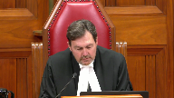
In the case of Her Majesty the Queen, in right of Canada against Cheyenne Sharma, for the appellant, Her Majesty the Queen, Jennifer Conroy and Jeanette Givico-Glou, for the intervener, Attorney General of Saskatchewan, Noah Vernikowski, for the intervener, Attorney General of British Columbia, Micah B. Rankin, for the respondent, Cheyenne Sharma, Nader R. Hassan and Stephen Ellward, for the intervener, Aboriginal Legal Services, Inc., Jonathan Rudin, for the intervener, Legal Services Board of Nunavut, Eva Tashigrine, for the intervener, Criminal Lawyers Association, Ontario, Promise Holmes-Skinner and Andrew Pugioni, for the intervener, Association Québécoise des Avocats et
Avocates de la Défense, Maître Maxime Raymond, Maître Emmanuel Arcand, for the intervener, Criminal Trial Lawyers Association, Catherine Quinlan, for the intervener, Canadian Bar Association, Chantelle Van Wiltenburg and Eric V. Gautard, DQC, for the intervener, Federation of Sovereign Indigenous Nations, Ida Noor Sunchild QC, and Michael Seed, for the intervener, British Columbia Civil Liberties Association, Vincent Larachelle, for the intervener, Queen’s Prison Law Clinic, Chris Rudnicki and Theresa Doncor, for the intervener, HIV and AIDS Legal Clinic, Ontario, and HIV Legal Network, Robin Nobleman and Ryan Peck, for the intervener, Alissa Lombard, for the intervener, Women’s Legal Education and Action Fund Inc., Alissa Lombard and Aubrey Charrette, for the intervener, Canadian Civil Liberties Association, Michelle M. Bedolph and David M. Humphrey, for the intervener, Assembly of Manitoba Chiefs, Carly Fox, for the intervener.
Justice Wagner (00:02:47): Native Women’s Association of Canada, Laura Ezuka.
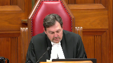
For the intervener, Ontario Native Women’s Association, Alana Roberts and Connor Belfell.
For the intervener, David Asper, Center for Constitutional Rights, Jessica Orkin, Adriel Weaver.
For the intervener, Canadian Association of Elizabeth Frye Societies, Emilie Temin.
For the intervener, John Howard Society of Canada, Emily Young and Andrew Max.
Ms. Conroy.
Speaker 1 (00:03:32): Good morning Chief Justice and Justices.
In this case, a very sympathetic offender committed a very serious crime.
Nothing about the facts in this case are in dispute.
It is not in dispute that the respondent has lived a life of extraordinary hardship, nor that the legacies of colonialism have had devastating effects on Indigenous communities, leading to over-representation in the criminal justice system at every stage.
It is also not in dispute that the respondent imported nearly two kilograms of cocaine, nor that cocaine is a pernicious substance that destroys lives and communities and leads inexorably to extraordinary human suffering.
What is in dispute?
The reason that we are here is to answer a legal question.
Having created the conditional sentence as an alternative to incarceration in 1996, did Parliament have the constitutional authority to later restrict the general availability of those sentences for serious crimes?
In arguing that it does, we are asking this Court to reach into its arsenal of already decided cases and established principles to overturn the decision of the majority in the Court below.
We have three main points.
One, the restrictions on conditional sentences do not infringe Section 15.
The majority in the Court below collapsed the two stages of inquiry under Section 15 into a single inquiry into a historic disadvantage that is unworkable as a constitutional standard in criminal law.
Two, the restrictions on conditional sentences do not infringe Section 7.
The majority in the Court below incorrectly found that a maximum sentence of 14 years or life is not an appropriate marker of seriousness.
The impact of the restrictions is rationally connected to their purpose.
They are neither overbroad nor are they arbitrary.
Three, if this Court disagrees and finds that the restrictions are constitutionally suspect, those concerns can be alleviated at Section 1.
In 1996, Parliament rewrote the law on sentencing in Canada.
After decades of sentencing research and review and several failed attempts at a bill, Parliament enacted Part 23 of the Criminal Code, which just was described by this Court as a watershed in criminal law and sentencing.
This important reform codified principles of sentencing that had not previously been codified, such as denunciation and deterrence, and importantly, the principle of restraint in Section 718.2e.
The principle of restraint calls on trial judges to pay particular attention to the circumstances of Indigenous offenders at sentencing and tells trial judges to use incarceration as a way to ensure that all offenders are treated equally.
As part of this reform, the government also expanded the availability of fines, authorized diversion for adult offenders, and created the conditional sentence as a meaningful alternative to incarceration for less serious offenses.
As the years went by, Parliament placed greater limitations on the availability of conditional sentences, culminating in 2012 with the introduction of the Safe Streets and Communities Act, which restricted the availability of conditional sentences for certain categories of serious offenses, including those punishable by life in prison.
Virtually all legislation makes categories and distinguishes.
This Court has told us that not all distinctions are discriminatory.
The criminal law in particular is about distinguishing conduct that is morally acceptable to society and conduct that is not.
The Criminal Code provides what the punishment will be for transgressions of these social conduct rules.
Within the realm of punishment, Parliament has prescribed many options, but they are not all available for every crime.
Justice Kasirer (00:08:42): Ms. Conroy, can I stop you right there because you’ve used the word availability about six times, and I hate to say that I see where you’re headed.
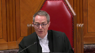
718.2e indeed starts with all available sanctions.
But I just wondered why in your argument you insist on the word availability and you don’t look over at the French text.
Have you looked at the French text?
Justice Kasirer (00:09:15): which says, les sanctions substitutives.
Justice Kasirer (00:09:21): which is more plainly an allusion to sanctions which are a substitute for imprisonment.
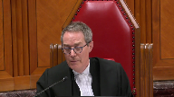
And this notion of availability that you insist upon, and indeed is at the centre of your argument in your outline, I was surprised that the Queen and Rite of Canada didn’t allude to the French text.
Speaker 1 (00:09:48): I apologize for the oversight, you’re right, the Federal Crown should be looking at certainly both versions of the statute.
I think the availability point perhaps doesn’t hinge so much on the word availability and is the concept that when Parliament is setting parameters for punishment, that it’s Parliament that gets to decide for what crimes each punishment will be an option.
And so in section 718.2E, when the Parliament is telling trial judges, look, when you have someone in front of you, don’t just jump to prison, you need to look at all these other available options in English or substitutes, to use the French language that Justice Casigreal that you’ve given us.
They are substitutes, they are substitute options, but in our respectful submission, the rationale for what was behind Parliament and what the mandate of Gladue requires doesn’t turn on that one word.
Justice Kasirer (00:11:12): That’s a fair point
and I didn’t mean to be, I wasn’t trying to catch you out, so that’s a good answer.
I just was surprised because you do insist you do put available in italics in your argument right the way through and I was just a little surprised.
So I’m glad to have your answer.
Thank you.
Speaker 1 (00:11:29): I’m happy for it to be pointed out and and I assure you that my French counterparts are cringing that we did not put in the bilingual bilingual version of the statute
so I appreciate your your question Justice Kessie there.
The jumping let’s let’s jump right into the test for section 15 and and let me talk about what we say is the problem with the majority decision below.
So this court has established a two-part test for section 15.
One does the law on its face or in its impact create a distinction based on an enumerated or analogous ground and two does it impose a burden or deny a benefit in a manner that has the effect of reinforcing perpetuating or exacerbating a disadvantage.
We say the majority made mistakes at both stages of the test.
I’m going to submit to you what we say were the two errors that they made at stage one and then move on to stage two.
I recognize that I think this court will likely be most interested in the discussion that comes at stage two
but I think from a jurisprudential perspective it’s important to make the points with respect to stage one and what we say they did wrong.
We say at stage one
But may I just
Justice Martin (00:12:52): intervene here and ask you, you’re dealing with the application of our existing jurisprudence.
You’re not asking us to change that jurisprudence.
Speaker 1 (00:13:02): we are not.
Thank you.
What we say is the mistake of the majority at stage one of the section 15 test is one that they failed to consider the temporal context within which the legislation exists and two that there should be some evidentiary burden on the claimant at stage one.
With respect to the context of the legislation, in this court’s decision in Allianz, Justice Abella held that the focus of the analysis has to be on the provisions themselves.
She wrote assessed on their own and regardless of the prior legislative scheme because otherwise comparing a prior version of the scheme with a current version of the scheme would be to constitutionalize the policy choice embodied in the first version of the act.
In this case, if one looks at the legislation as it currently stands on its own regardless of the prior legislative scheme, it cannot be said to create a distinction on the basis of race.
The only distinction drawn in the legislation is between those who commit serious offenses punishable by 14 years or life in prison and those who don’t.
The only route to finding a distinction comes with a temporal comparison between what it looked like in 1996 when Parliament first enacted the legislation and what it looks like now and that’s that’s something that Justice Abella said in Allianz was not appropriate that it would constitutionalize the policy choice embodied in the first version of the act.
We say that’s what the Court of Appeal has done.
What if the conditional sentence regime was enacted in 1996 as it’s with these limits in place?
What would the distinction on section 15 be if that were the case?
This court in Prue wrote when looking at the conditional sentence provision that Parliament could have easily excluded specific offenses from the ambit of section 742.1 but chose not to do so.
If it was okay for them to include these things at that time, how can it be constitutionally precluded from doing so later with the benefit of experience now in how the provisions were being interpreted?
If the only distinction can be drawn that can be drawn is on temporal lines then is this not exactly what Justice Abella said was not okay in Allianz.
Justice Martin (00:15:55): But let me just ask you this question here, accepting that that is the law.
Why is this different than what a court does every time they deal with a charter issue and question whether there’s been an infringement?
Is they look at the actual law that’s being challenged.
And here it would seem to me that a different characterization is possible from your friend’s opposite, which is that they look at these two individual provisions, C and E2, and say, just look at them.
That’s what we’re looking at, is only those provisions.
And we draw from that that there is a distinction, not on its face, but in adverse effects.
So it’s not constitutionalizing any prior option that Parliament chose to make a different legislative regime, but when we look at what is in place, we always attack what is in place in terms of a legal analysis.
And they’re just saying it’s an adverse effects discrimination case.
You may say you haven’t made it out, but isn’t it no more or less than that?
Speaker 1 (00:17:05): I think, Justice Martin, that what our friends are saying is, you know, once Parliament enacted this thing, I think we can all agree Parliament was under no constitutional obligation to enact a conditional sentence in 1996.
It was a creative solution that they came up with.
What my friends are saying is once they did that, once they enacted it with a particular set of restrictions, then adding more restrictions is discriminatory.
That’s their argument, that in 2012 when Parliament came in and said, you know what, we don’t think this is working, there’s people that are getting conditional sentences that we never meant to get conditional sentences.
We do not want people who commit serious offenders or who are dangerous getting conditional sentences, so we’re going to amend the legislation and we’re going to add restrictions.
What our friends are saying, what my friends on the other side are saying, is that decision, it’s that decision that’s being impugned to add those restrictions.
And so I don’t think they are looking at the legislation as it stands.
There’s certainly, because as it stands, the legislation draws this distinction based on the seriousness of offense.
There’s certainly no allegation, and nor should there be, in the absence of an evidentiary record, that the targeted group is committing a disproportionate number of those offenses, right?
Like the distinction, the line drawing here is according to level of offense, and perhaps it’s overbroad, and that’s an issue for us under Section 7.
But under Section 15, where we’re looking at, is it making a distinction, is it drawing a distinction on the basis of an enumerated ground?
It’s hard to see that when you just look at the legislation.
But accepting that it does, you know, we will address what we say what happened at Part 2, but before I get to Part 2, I think it’s worth discussing the evidentiary burden.
Because in the early days of Section 15 jurisprudence in this case, it was always said to be that the claimant has a burden under the first section, under the first step of the test.
And in Whiffler, this court said that the claimant will have more work to do at the first step when it’s an adverse effect.
You know, while finding that it was not necessary to necessarily call this evidence in Fraser, Justice Abella still wrote that it might be helpful, particularly statistics in particular, she wrote, might be helpful in cases where you have a provision that doesn’t just affect the identified group, but infects a broader range of people, which this one clearly does.
And in Fraser, Justice Abella said, you know, the types of evidence that would be especially helpful to show this impact would be evidence about the situation of the claimant group, which is clearly not necessary in this case.
There’s both an abundance of evidence to support the fact that Indigenous people are overrepresented in the criminal justice system, that this is a product of colonialism and systemic discrimination.
We don’t even need the evidence in the record to say that because those facts are so notorious.
The over-representation of Indigenous people in the criminal justice system is a crisis.
So you don’t even need the record to support that, for number one.
But number two, the other thing that Justice Abella writes about in Fraser is that you need evidence about the results of the law.
And here, in this particular case, the respondent brought an application and filed a voluminous record before the trial judge.
And as I just said, that record definitely supports the finding that there is systemic discrimination, that there’s over-representation.
But does it support the finding that this particular provision, A, had a beneficial impact, or B, that restrictions placed on the provision caused discrimination?
Are we at stage one or stage two of the analysis right now?
Stage one.
Okay, because I-
Justice Brown (00:21:28): Because it was sounding a lot like stage two, right?
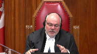
When you talk about causing, I can’t remember the exact words you used, but stage one we’re talking about whether there is a distinction created by legislation.
And then stage two is whether this reinforced, perpetuated, exacerbated disadvantage, which I think is more connoting of a causal analysis.
I mean, legislation doesn’t really cause a distinction, it creates a distinction.
But I just want to signal to you that I’m struggling about, and I have been struggling as I’ve been preparing for this appeal, if causation is still a thing, then where is it a thing in the analysis?
Speaker 1 (00:22:19): So, Justice Brown, you know, this is struggling with the application of Section 15 on the facts of this case, I think is universal, and I think the Court of Appeals struggled with it as well.
There’s a dissent.
You know, we say, and the way that we pleaded it in our factum, is that this issue of causation arises at the first step, because the distinct, it does, there’s no, in our submission, there’s no obvious line-drawing in terms of the adverse effect, like, the actual distinction is…
Justice Brown (00:22:59): Think about Quebec and A, right?
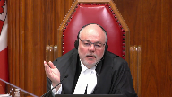
If the state, if the court says in Quebec and A, if the state conduct widens the gap, dot, dot, dot, then it’s discriminatory.
That’s stage two, is it not? Right.
And that’s a cause.
That was causation as the court understood it way back in Quebec and A.
Speaker 1 (00:23:21): So I think, I think in answer to your question, if, if the court, I think the only point that we’re making on causation and I think if we want to say, look, you know, we’re satisfied what the Court of Appeal did was said, we’re satisfied that the fact that this offender is Indigenous and, and, and we think she should have gotten a conditional sentence.
This provision precludes her from getting one.
And, and since Indigenous offenders are overrepresented in the criminal justice system, we’re satisfied that, that, that’s enough of a distinction to get through the low, the low burden of stage one.
And if that’s the case, and we want to look at causation in stage two, then I think that our only point on causation here is that in this case, in Eldred, in Eldredge, there was a deaf claimant who could not access health care for the hearing abled and so there was clearly a distinction and greened the human rights statute excluded sexual orientation as a protected ground and the person before the court was homosexual and wanted to raise a claim and was precluded from doing so.
There’s an obvious connection or nexus between the distinction drawn and the, the adverse effect created by the legislation and the enumerated group.
And here where there isn’t one, we say that causation is required.
And if that causation is required at the second step, then, then, then, then we can consider it the second step.
But the question here is that all of the statistics that she led, that the respondent led in this case, did not show that there was a, that this legislation caused an impact for Indigenous offenders.
There was, there was.
Yeah, I understand.
Justice Brown (00:25:08): I understand your point about that.
It’s just that.
Justice Rowe (00:25:11): I’m going to make a simple logical point.
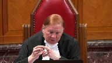
Because unlike some people, I prefer simplicity not complexity.
I’m made uncertain by complexity because I find it often obscures logical error and a lack of analytical rigor.
But to make my point, you can have causation as an element in step one and step two, one possibility.
You can have it in step one, but not in step two.
You can have it in not in step one, but in step two.
Or you can have it at neither step.
So the fact that it may appear in both one and two need not be a problem.
I mean, it’s not like, well, which is it?
And the answer is, logically, it could be both, albeit one would think that as step one and step two address somewhat different questions or different aspects of the analysis, the causation would serve for a different purpose, to demonstrate a different element.
So this necessary dichotomy, oh, is it in one or is it in two, I think that’s just like a basic logical error.
Justice Karakatsanis (00:26:35): Can I?
Oh, we’ll go ahead and answer
and then I will pose my question.
Speaker 1 (00:26:41): Thank you, Justice Karakatsanis.
Justice Roe, in answer to your question, I think that’s right.
I think the complexity of causation in this case, and one of the problems we say with this case, is that in this case, the distinction at stage one was the fact that there was sort of systemic discrimination in the criminal justice system and overrepresentation of Indigenous people in general.
And so the issue that where causation comes into it at stage one is, is that enough?
Is that a sufficient basis to say that a distinction has been made?
You know, historical, it feels as though historical disadvantage is being used at both stages of the test.
But I agree that causation does also come into it at stage two, because one of the things that is argued is that the, you know, this whole argument is premised on the fact that conditional sentences alleviate systemic discrimination by providing an alternative to incarceration for Indigenous offenders in particular.
And the problem with that is that on the respondents’ evidence that they put before the court, that was not actually the case.
The overrepresentation of Indigenous people in the criminal justice system since 1980 has been going on a straight increased line.
And when you look at the study that my friends rely on, the Andrew Reed study, what that study talks about is, look, when the conditional sentencing provision came in in 1996, when you look at the usage of the conditional sentence as between Indigenous and non-Indigenous offenders, between 1996 and 2001, it was most, it was, there was more non-Indigenous offenders getting conditional sentences than Indigenous offenders.
And then in 2001, it switches.
But then in 2008, it switches back again.
And again, it’s Indigenous, non-Indigenous offenders getting more conditional sentences.
And then by the end of the study period, he looks at 2014-2015, it’s about the same.
And so our only point on this is that when the, when the adverse effect, the distinction that the legislation is said to create is not obvious on its face, even in adverse effects discrimination cases, there are cases where the distinction is more obvious.
You know, in the pension benefits scheme where the woman is working, part-time to look after her children, and she can’t claim the same benefits, but somebody who’s on leave without pay isn’t working at all, can’t?
I mean, that’s obvious.
But here, it’s not so obvious where we’re talking about a criminal, a standard for this provision as being the maximum sentence of the offence.
So my question.
Yeah, sorry, Justice Gary.
No, finish, I’m just waiting.
Oh, no, I’m finished, please. Okay.
Well, I, my question is,
Justice Karakatsanis (00:30:11): My question is actually to ask you of maybe why it isn’t as obvious.
If we accept, and I don’t think there’s any real dispute that indigenous offenders are hugely over-represented in prison, for women up to 50%.
Given the extent of that over-representation, is there, why would it not logically follow that a restriction for the availability of conditional sentence has a differential impact on indigenous offenders, especially women?
There’s a risk of, given the extent of overpopulation in prison, why doesn’t it follow that the risk is greater for indigenous offenders?
The risk of overpopulation is greater.
I guess, I’m coming back to what kind of evidence do you need?
We’ve got judicial pronouncements that makes it, no one disputes that there’s systemic discrimination in the justice system for indigenous people.
No one disputes that there is extensive over-representation of indigenous offenders, in particular for women.
Why doesn’t it logically follow that a restriction for a conditional sentence that allows them to avoid incarceration would have a differential impact on them, and if there is evidence to show that, I mean, your reference to between this year and that year and so on, if there’s evidence to show that that logic doesn’t hold, then why can’t that be part of the section one analysis that allows the government to bring that level of detailed expert testimony rather than the indigenous offender before the court?
So it does seem simpler to me, I guess, and I’m giving you an opportunity to tell me why it is not logical.
Speaker 1 (00:32:19): Thank you, Justice Carrickatsanis.
I think that there’s an overwhelming sense that that should be the case, that we know all the things that we know.
We know indigenous offenders are overrepresented.
We know there’s a crisis of incarceration.
And so anything that limits the, you know, the availability of a sentence that is not one of incarceration must then necessarily impact the group.
And so, and for us, this is getting smack dab into the stage two problem, because if you do accept that this legislation creates a distinction on the basis of race, because exactly as you’ve just said, Justice Carrickatsanis, because of the fact that it’s going to, by common sense alone, looking at it, if less people can get a conditional sentence, then more people are going to jail.
If more indigenous offenders are in jail, then that’s going to create, if that’s enough to find a distinction at stage one, then it gets us into stage two.
And the problem at stage two is that the majority below did just completely de-contextualized any analysis of section 15.
And what we say is there’s a difference.
Justice Karakatsanis (00:33:47): My question was about stage one, which is supposed to be a low bar, which overwhelming sense of common sense strikes me as meeting a low bar, but that question was with respect to the first question.
So if there’s an issue with question number two, then let’s talk about that, but I guess I just wanted your answer on stage one.
Speaker 1 (00:34:15): So our answer on stage one is that from a constitutional perspective, if we follow the dictates of this court, that more is required at stage one than just pre-existing social disadvantage to find a distinction.
And so that’s our answer to that question.
Justice Karakatsanis (00:34:42): The question was, but I just said that the government is in a position to lead evidence on Section 1. Yes.
I’m not suggesting.
Justice Brown (00:34:50): But let me ask you this.
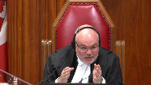
If we accept that that’s enough for section one, why bother with section two or with stage two, right?
If we accept that the fact that a class of people, in this case, indigenous persons, have a preexisting disadvantage is an answer to the question as to whether the law creates a distinction.
And I realize that you resist that conclusion, but if we were to accept that conclusion, you say then we move on to stage two, but I’m wondering what work is left to do at stage two because you’ve already accepted that the disadvantage is a distinction.
And if in fact the disadvantage is a distinction, then wouldn’t it follow that the law imposes a burden or denies a benefit in this case, which has the effect of reinforcing, perpetuating, or exacerbating that distinction?
Wouldn’t it follow automatically?
Speaker 1 (00:35:58): Well, Justice Brown, I think the problem is that in Section 15 at Stage 2, it is appropriate to consider the context within which the legislation exists.
And so, you know, our friends have litigated this as there’s an integral connection between the conditional sentence and the principle of restraint in 718.28.
And we say that that is not the case, that what is mandated in order to give an appropriate sentence to an Indigenous offender does not require this one tool being the conditional sentence.
And, you know, there’s a difference between what is a preferred sentence, what is even a proportionate sentence, and what is a constitutionally mandated sentence.
And what the court below does in this case is they say this offender has to get a conditional sentence because nothing short of a conditional sentence would be constitutional for her.
And our submission is that that constitutionalizes the conditional sentencing provision in a way that doesn’t take into consideration the fact that when Parliament enacted this provision, when they’re talking about crime and punishment, when we’re talking about sentencing, there’s a great number of other factors that have to be taken into consideration.
It’s very different.
You can’t apply the jurisprudence from sort of the pension cases, for example, in a direct way to criminal law and sentencing.
You know, punishment is not the, it’s not equivalent to a benefit, right?
Benefits like pension schemes, access to health care, education, they grant people singularly positive social or material benefits.
But when we’re talking about a sentencing provision, sentencing is not a singularly positive material benefit.
It’s a balancing.
It’s a number of principles and countervailing interests.
And, you know, the cornerstone of this court’s jurisprudence on sentencing is that it’s an individualized process.
Justice Rowe (00:38:33): But doesn’t it come down to, doesn’t the position of the majority come down to this?
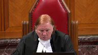
Parliament via Section 15 or Section 7 cannot legally interfere with the discretion of sentencing judges.
And if parliament encroaches upon that, the courts will strike it down and affirm their constitutional right to sentence as they see fit.
Speaker 1 (00:39:09): Justice Roe, that is exactly what we say is the problem with this analysis.
There are no bounds.
The natural conclusion is that any time that Parliament passes or puts limits on judicial discretion in sentencing, that those limits on judicial discretion are basically equivalent to limits on gladue.
So how does this not implicate mandatory minimum punishments, for example?
Mandatory minimum punishments, unlike conditional sentences, actually require that people go to jail.
The restrictions on conditional sentences, although the majority said this, they’re incorrect.
They do not mean that people have to go to jail.
There are other options available, as long as they’re fit in the circumstances, that would have an offender not go to jail just because a conditional sentence is not available.
Mandatory minimums, however, say if you’re convicted of this offence, then you must go to jail.
And on the reasoning of the majority, how does that not call into question every single mandatory minimum that exists in the criminal code?
Justice Jamal (00:40:36): Ms. Conroy, you’ve mentioned the majority’s reasons and I wonder whether Justice Feldman really went beyond common sense and pre-existing disadvantage because in paragraph 70, we’re talking about stage one here, she talks about the legislative history and jurisprudence demonstrating that conditional censuses take on unique significance in the context of Aboriginal offenders by conferring the added benefit of remedying systemic over-incarceration.
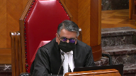
So she herself doesn’t just say, well, it’s a matter of common sense and pre-existing disadvantage.
She roots it very much in the history and jurisprudence and this particular framework.
On her analysis, isn’t the distinction at stage one the removal of the accommodation for all offenders, but in particular for Indigenous offenders, of the conditional sentence?
Isn’t that the distinction that’s drawn?
Speaker 1 (00:41:34): But if the removal at stage one is the removal of something that, you know, that for all offenders, then it gets us back into the same discussion with respect to if I could just turn up the majority’s decision, paragraph 70, to make sure that I’m speaking to the right question.
The, the, thank you Justice Jamal, I’ve now looked at the paragraph.
I think, I, the, she, Justice Feldman in the, in this paragraph does refer to the legislative history, and the jurisprudence, but in our respectful submission, the, the, in terms of the legislative history, the legislative history of the conditional sentencing provision is, is, shows that it’s, it’s a provision that Parliament had a particular focus on when it was enacted in 1996, and that focus was that this was going to be enacted in order to, to take, to, to reduce incarceration for less serious offenses.
The legislative history, and we’ve referred to it in our fact, and we have some pieces of the legislative history in our condensed book, the legislative history shows us that, you know, the provincial institutions were full of people who couldn’t pay fines.
They were full of people who were serving five-day, 10-day, 15-day sentences for very minor offenses, and Parliament’s concern was, look, our jails are getting too full.
We need to send the people who really need to be in jail to jail, so let’s find a way to get these minor offenses out of the system, and that was one of the driving forces for the conditional sentence.
And then what happened?
Conditional sentences started being handed down for more serious offensives.
People started getting concerned about the fact that people who committed a sexual assault could get a conditional sentence.
People who committed domestic violence could get a conditional sentence and end up back in the community or the home.
These were, were concerns, and so Parliament changed the legislation in 2007 and limited it to five-day sentences.
It changed the legislation in 2007 and limited it so that it could not apply to personal injury, serious personal injury offenses, and then what happened after that?
There was litigation.
What, what does it mean to be a personal serious injury offense, a serious personal injury offense?
What does that mean?
This court decided a case on that very issue in Steele, and Parliament said, there’s, there’s, there’s a lack of clarity, there’s a lack of consistency.
What we really meant with this provision is people who commit the most serious offenses, which they used the maximum sentence as a marker of that seriousness, those people are not going to get a conditional sentence.
That’s the line drawing that they did, and whether that’s good policy or bad policy, because it has, you know, perhaps resulted in, in, you know, greater incarceration.
It was their policy decision to make, and is it constitutional?
I think the important thing here is to go back to what does Section 15 protect?
What is Section 15 protecting against?
Is this a discriminatory law?
Does it have a discriminatory effect?
And by failing to take the context of sentencing into account, the majority effectively reduces the Section 15 analysis to a simple inquiry into whether or not a different sentence might have better addressed the claimant’s historic disadvantage without an appreciation of the complex matrix considerations informing Parliament’s line drawing.
You know, the Ontario Court of Appeal and Morris recently said the sentencing judge’s task is a specific and focused task.
It’s not the job of the sentencing judge to account for systemic discrimination in the criminal justice system.
It is a crisis.
Justice Brown (00:45:58): They do have to account for it.
I mean, it’s a matter of glad you.
The question is whether they can solve it.
Speaker 1 (00:46:06): Yes, so our submission is it can’t be solved.
I think that’s this court’s submission as our opinion as well
Well, it can be so
Justice Brown (00:46:13): But probably not by a sentencing judge.
It could be solved by I mean this is a complicated issue
But but but to say it’s insoluble is I think to throw our hands up in the air
And I think it behooves us all not to.
Speaker 1 (00:46:26): Agreed.
And Justice Brown, you raise an excellent point that reminds me, you know, when I was looking at the cases, when I was looking at what this court has said in Gladue and Eapley, if you go back and look at those cases, the court in Gladue when the court was saying like, listen, trial judges, you need to take this into consideration.
This is what the principle of restraint means.
It means you have to look at systemic and background factors.
This goes to moral culpability.
But the court said, you know, what does that mean exactly?
In Gladue, the court talked about in terms of alternatives to incarceration.
In Gladue, the court mentions the conditional sentence, yes, but also talks about the availability of other options.
You know, are there are there community based sanctions like sentencing circles?
Can we get the community involved?
The problem with conditional sentences, too, is, you know, we have to consider the fact that there there’s a you have to consider whether it’s appropriate in the circumstances.
And, you know, again, from a constitutional perspective, this court has said, including in Eapley and Nassau Galiwak, that, you know, one principle sentencing does not trump the other.
And if we find that the principle of restraint in this case requires one particular form of punishment, then doesn’t that, you know, to go back to Justice Rose question before, doesn’t that that mean that there’s a lot of the distinctions that are drawn in criminal law that are going to be constitutionally suspect?
You know, we’re saying that that that this is, it’s not just about whether a conditional sentence may have been a fit sentence for Ms. Sharma.
We’re saying she had to have a conditional sentence in order to give effect to Gladue.
Otherwise, it’s discriminatory.
And and and Gladue doesn’t say that and Eapley doesn’t say that.
This court this court talks about a variety of different of giving effect to that.
And there’s a difference too, we submit, between the moral blameworthiness of the offender before the court and the objective seriousness of the offense.
These are objectively serious offenses.
Justice Côté (00:48:57): Ms. Conroy, about the seriousness of the offense, I’d like to get your views about the overbred argument of Ms. Sharma.
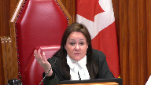
She says that several offenses captured as serious offenses under the imping provisions, such as deceptive telemarketing, for which offenders never received more than a two-year imprisonment, so very far from the 14-year.
And she says, Ms. Sharma, that the imping provisions overshoot their legislative purpose of punishing more serious offenses, and then there is some overbred here.
What do you say on that?
Speaker 1 (00:49:43): Thank you Justice Cote.
What we say is the offense that that that the legislation is not overbroad.
The in terms of the seriousness in in terms of pun it goes it goes too far because it does more than punish serious offense offenders.
That’s the statement of purpose that the majority you know my friend is advocating the statement of purpose that the majority below came up with which was much more limited than what the Saskatchewan Court of Appeal had put forward in Neary which recognized that there were a number of purposes for why Parliament enacted those limits and and I’ve already talked about those and just talking about the history of this legislation you know the concerns of that were animating Parliament at the time it was yes they don’t want people who commit serious offenses to get conditional sentences but also they were concerned that all the other ways that they had tried to convey that message had been unclear.
So I think clarity and consistency which are which was recognized as part of the purpose in Neary but is lost by the Court of Appeal below in this case is important because when you look at the legislative history the Hansard debates that really is one of the driving forces of Parliament you know we if we’re going to draw lines we need to draw them clearly especially in sentencing and my friends on the other side they do point to deceptive telemarketing I think they point to small frauds and they say you know how is it not over broad and our response to that is this is a restriction on a conditional sentence it is not a mandatory minimum penalty if someone if someone is charged with fraud over five thousand dollars and the fraud is a minor fraud it’s five thousand and one dollars for example you know then then that person is not going to go to jail because a conditional sentence isn’t available that person may get a fine that person could get an intermittent sentence you know if they’re if the moral blame worthiness of that person is so low then they could get a suspended sentence in probation or if the rehabilitation interest in that case is so high again suspended sentence it the the argument that it’s over broad because some people who are less moral blame worthiness blame worthy because they commit offenses that are at the lower end of the scale somehow defeats the the restriction on one particular form of punishment we say doesn’t consider the fact that there’s all these other punishments on the table and in Ms. Sharma’s case you know no there there’s a dearth of cases out there where somebody imported two kilograms of cocaine
um and and got a conditional sentence the Ontario Court of Appeal and Hamilton and Mason said this is a very serious offense and even where we have very seriously mitigating personal circumstances of offenders before the court the other principles of sentencing denunciation deterrence they still apply and and this court said in Epley and in Wells that the Gladue principle in section 718 2e does not mean that an offender is is guaranteed a particular results they’re guaranteed a particular process and that process is a trial judge who really really listens to what the circumstances are before him a Gladue report that really looks at the circumstances and brings to bear to the court all of the the history of colonialism the systemic discrimination all of the factors that may bear on culpability uh the the in terms of or the moral blame worthiness of the offender and and and it’s not to say you know moral reduced moral culpability that takes into consideration that all of these uh factors of of historical disadvantage may have have played a role in bringing this person before the court is not the same thing as as as saying there’s no there’s no moral agency you know
and and we definitely do not want to say that because that’s not the case there’s a difference between you know committing a crime and not committing a crime and when we’re talking about crime and punishment and sentencing all of those things have to be taken into consideration.
Justice Martin (00:54:26): And may I just ask you this question?
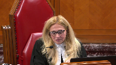
The trial judge found that the mandatory minimum under the CDSA was unconstitutional because it breached section 12.
That was a decision that the Crown has not appealed, and so therefore, in terms of the overall sentencing regime you’re talking about, the prohibition from a conditional sentence based on mandatory minimums doesn’t exist.
But I guess what I’m trying to put all the pieces together, I’m wondering, can you help me with, what is the relevance, if any, of the fact that the mandatory minimum was conceded as cruel and unusual punishment here?
Speaker 1 (00:55:16): So, in this case, the Crown at trial took the position that the sentence that an appropriate sentence for Miss Sharma taking into consideration all of the factors was 18 months.
You know, and and and the the trial judge found that the can that the, the MMP of two years was unconstitutional when it comes to an offender like Miss Sharma, and,
and, you know, the Crown is not defending the mandatory minimum punishment.
In this case, the fact that there is no mandatory minimum punishment means that the trial judge could have given Miss Sharma any available sentence.
The, the, the, if he felt that Miss Sharma did not need to go to jail he could have if the primary focus is, you know, I’m looking at this offender.
I really don’t think that, given the balancing that is involved at sentencing, but a proportionate sentence of this offender is to send her to jail.
I don’t think it’s going to meet the principles sentencing and 17, 718.1 or two to send this offender to jail, he could have given her a suspended sentence and probation he did not do that, because her moral readiness is only one part of the puzzle and the other part is the seriousness of the offense.
And the fact the seriousness of this offense is not something that figures prominently in the decision of the Court of Appeal.
We say it, it’s an important factor, right, importing two kilograms of cocaine, that has huge detrimental impact on society.
This Court just recognized the severity of drug crime in Parenteau and Felix, and it’s worthy of noting that one of the offenders in that case was also an Indigenous offender, it was a Metis offender, and that person, I believe it was a 14 year sentence.
So, the problem in this case is, we have all these massive factors, mass society factors to take into consideration, you know, the problem of over representation, the problem of over incarceration.
But we also have to look at the micro problem that’s before you in this case, which is a jurisprudential one, which is how is this court in Section 15 anyways, how is this court going to set a test, a workable framework that doesn’t do what the decision of the majority below does, which is constitutionalize a particular form of punishment.
Because in, again, going back to Gladue and Eapley, this court never said that one particular form of punishment was required in order to give effect to Gladue.
And Gladue is one of the principles in Section 718, but there are other principles and all of those principles have to be taken into consideration.
Justice Kasirer (00:58:47): Ms. Conroy, you’re making compelling arguments about the government’s or parliament’s purpose here.
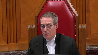
I’m wondering, and your time is running slow, you haven’t spoken much about section one, about how these same kind of arguments might have been deployed.
That is to say, oppressing and substantial purpose, rationally connected, perhaps minimally impaired.
You haven’t done that.
I recognize that the parliamentary record is rather thin for you to be able to make that case.
I’m wondering why you haven’t done so, or you’ve done it almost, I don’t want to say as an afterthought, but even in your factum, you give it rather short shrift.
Speaker 1 (00:59:36): The focus of the primary concern of the Crown in this case is a workable framework for Section 15.
That is the problem that brought us to this court looking for a solution.
Is can we look at what the Court of Appeal did below and the test for Section 15 and can that be ameliorated?
Because our concern is, as we’ve set out in the factum I’ve already alluded to, the framework that they’ve come up with below is a framework that really will call into question the ability of Parliament to enact and amend criminal law.
I take your point.
Justice Kasirer (01:00:22): But the constitutional questions before this court deal with the Section 52 power, and that requires us to go to that second stage, even if, I mean, if in the unfortunate circumstance that one would disagree with you on the first point, for example.
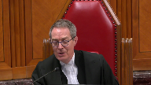
Speaker 1 (01:00:46): Thank you Justice Kessia and we don’t disagree I was simply explaining because you mentioned that we gave short shrift to section one in our factum that in the allocation of our 40 pages we felt it was the most pressing and substantial for us to make our case as to why we would really love it if this court could intervene on section 15.
Justice Brown (01:01:06): You simply had to balance the salutary effects with the deleterious effects, I suppose. Yes.
Speaker 1 (01:01:13): You
Overlapping speakers (01:01:13): So.
Speaker 1 (01:01:13): But that’s not to say that we’re abandoning section one, and we do have a case to make on section one.
And we did a lot of what we, in our factum, before we get into our section 15 argument, there is quite a lot of discussion in our factum of the conditional sentence and the sentencing reforms.
And there are a lot of references there to legislative history that informs this process.
It’s also something that we discussed under section seven, but our pitch in the, I’ve lost the clock that, oh, in the, I found the clock and it tells me I have one minute.
So the pitch on section one in the minute that I have left, Justice Kessie, is basically that this court has recognized on many occasions that the criminal lawmaking power of parliament is an important one.
This court in Latimer made a number of comments with, to that effect, that apply in this case.
The pressing and substantial objective of parliament, we say, is obvious.
It’s obvious in the legislative history that we’ve provided.
It’s obvious in looking at part 23 of the code.
And the fact that this is a regime that has to account for a multitude of public policy interests.
It’s not just the offender before the court and how do we punish them?
It’s how do we also take into consideration restitution to victims, restitution to the community, rehabilitation, reintegration.
These are big concepts that parliament had to balance when they, whenever they’re introducing a piece of legislation, particularly in something as important and as complex as sentencing.
And we say that when you get to the second part of the section one inquiry, and you look at the rational connection, the minimal impairment, and the balancing at the end of the day of all of these things, then though, and giving deference to parliament and recognizing the significance of these issues, that we say a case can be made out for section one on the particular facts of this case.
Justice Wagner (01:03:27): So, Justice Karagatsan, this is one final question for you.
Justice Karakatsanis (01:03:30): You may in fact have answered it.
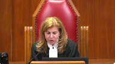
I was going to ask you that many of the submissions that you’ve made about the seriousness of the offence about the competing public policy issues would appropriately be dealt with in Section 1 as well.
And after all, there’s no breach of the charter unless both Section 15 and Section 1 are analyzed.
So my question was going to be, could it easily fit under Section 1?
And I think your answer was yes.
Speaker 1 (01:04:04): Yes, Justice Caracassanas, absolutely.
A lot of what I’ve said also applies to Section 1 and and in saying that I recognize, Justice Cacicrea, we recognize your decision in CP where, you know, there is an open question in this court as to when we’re talking about the contextual inquiry that I talked about at Stage 2 of the Section 15 test, that there is an open question in this court about whether that belongs in 15 or whether that belongs in 1.
And we argued it under 15, but we say it has equal application under Section 1.
Justice Wagner (01:04:44): All right, thank you very much.
Noah Vernikowski.
Speaker 2 (01:04:48): Thank you Chief Justice.
Saskatchewan will start by addressing Justice Brown’s question about causation, and then we’ll make three points.
We submit that causation is considered at both steps, but it is primarily a step one issue.
For indirect discrimination claims, step one requires a disproportionate effect based on a protected characteristic, and this necessitates the identification of an effect of the impugn provision, which necessitates an inquiry into what the impugn provision actually causes, and whether that effect is based on protected characteristic.
Step two then assesses the identified effect, and asks whether it amounts to a burden or the denial of a benefit that has the manner of reinforcing, perpetuating, or exacerbating this advantage.
An inquiry that also may look at causation to some extent.
At step one though, a distinction based on a protected characteristic has to be established, and this requires that the claimant prove an effect on the part of the provision.
And we submit that this is mostly a step one case.
On to Saskatchewan’s three other points.
Justice Martin (01:05:56): I bring you back, though, I mean, on the step one side, I understand that your submission is you need to prove a distinction and an adverse effect.
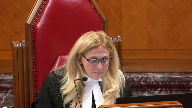
But didn’t justice Abela and Fraser say there was no necessity to prove that there is sort of there’s no causation requirement at that step, right?
That you don’t have to show that it the let me see.
There’s no requirement to prove that the law itself was responsible for creating the background social or physical barriers which made a particular rule requirement or criterion disadvantageous for the claimant group, Paragraph 71.
Speaker 2 (01:06:43): Thank you, Justice Martin.
I have an answer in one of the footnotes, I believe it’s footnote.
I submit that there’s a distinction between not having to prove the background factors was the lone cause or causes in a but for sense.
But at the same time, there having to be a requirement of the based for or on the based on that’s the first part of that component.
That’s my position on that point.
That at first, at the first step, there is a requirement to prove a distinction based on an enumerator analogous ground.
That’s and that’s that’s not a
but for causation test, but there still is is a question there about about that means.
On to Saskatchewan’s three other points.
Point one relates to the first step of the section 15 test.
And for indirect discrimination cases, we argue that the claimant should advance a fear a clear theory of distinction at first instance.
The second point is a direct response to one theory of distinction put before this court.
And the third and final point relates to section one and time permitting.
I’ll get to that.
So first, theories of distinction.
The point I submit is particularly and I submit this is particularly pertinent in this appeal where where we’re not entirely sure what the theory of distinction and issue is or what the adverse impact based on race the court found below was.
And a point that I want to make clear for the court is that a facially neutral provision could create a distinction based on race or have a disproportionate effect based on race in a variety of distinct ways.
For example, it could affect protected group members differently because it applies to them more frequently.
Or it could affect them differently because it applies in a way that creates or leaves behind comparatively worse or disadvantaging results.
And if the issue is worse outcomes, those outcomes could be worse in a variety of ways.
This means that indirect discrimination claims necessarily focus on particular theories of distinction or particular articulations of in what way a law disproportionately affects protected group members based on that protected characteristic.
In most cases, it’s not possible to defend against general claims of indirect discrimination or claims or the respondent has no idea what the effect is that allegedly discriminatory.
The respondent can only address particular theories of distinction and either argue against them, justify them, or concede them.
So my submission is that the claimant should articulate in what way the impugn law creates a distinction based on a protected ground of first instance.
So that the respondent is made aware of the specific claim to which they must respond and about which they should call evidence when they have the opportunity to do so.
And this is particularly true whereas here where the respondent has no mechanism for demanding particulars.
We submit that this is partly what this court mentioned in Whittler when it said that claimants in these cases have more work to do with the first step.
It was about evidence but also articulation.
And we submit this is partly what this court meant in Tapotat when it suggested the court below erred in deciding the matter on a theory of distinction that was neither pleaded before the federal court nor the federal court of appeal.
Although the court’s concern to Tapotat was predominantly the shifting theory of distinction resulted in an insufficient evidentiary foundation for the new theory.
Fairness concerns are also engaged in our submissions when a theory of distinction isn’t argued at first instance.
Justice Rowe (01:10:24): You
Overlapping speakers (01:10:24): We’ll be right.
Justice Rowe (01:10:24): It will be put to us by others that what you are referring to in Whistler and Tapotet was overruled in Fraser, and therefore we should not have regard to the two earlier cases.
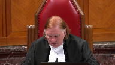
What do you say to that?
Speaker 2 (01:10:44): Thank you, Justice Roe.
My position is that Frazier has only overruled those cases to the extent that it’s obvious in the reasoning of Frazier.
And Frazier spoke about the first step not being particularly onerous, but it in no way relieved the claimant of a requirement to prove a distinction based on enumerated or analogous ground at the first step.
It was very clear that that remains the first step and that the onus for proving that step is on the claimant.
And it went through the types of evidence that are required to prove that.
And our submissions on the point is that a corollary of this is that you have to know about what that evidence is for, what the effect and issue is.
So I’ll move to the second point now wherein I address one theory of distinction before this court.
Some parties have argued there’s a distinction based on race solely because the impugned provisions impair the sentencing judge’s ability to order some forms of glad you’ve informed sentences.
They argue it’s discriminatory to statutorily prevent judges from ordering CSOs when CSOs may be that judge’s top choice for advancing ladu, proportionality, restorative justice, or other important sentencing principles.
We submit it’s not discriminatory to legislate some limits on sensing discretion just because those limits may increase incarceration for all, including those belonging to an over-incarcerated group.
Judges would be better equipped to address all types of over-incarceration if they had every sentencing option available to them all the time.
But that doesn’t mean that every limit, whether legislated or logistical, on available sanctions is automatically discriminatory.
Also, this argument leaves no room for any statutory limits on conditional sentences, no room for any mandatory minimum sentence.
And that’s, in our submissions, difficult to reconcile with this court’s section 7 and section 12 jurisprudence that specifically maintained a role for Parliament in the sentencing process by concluding that those sections of the charter do not require unfettered judicial discretion in sentencing.
For example, by one, centering the section 12 inquiry in the highly deferential concept of gross disproportionality, see Lloyd at tab 4.
And two, by rejecting proportionality as a principle of fundamental justice in the context of section 7, see the case at tab 5, where this court said, and I quote, Parliament can limit a sentencing judge’s ability to impose a fit sentence, but it cannot require sending judges to impose grossly disproportionate punishment.
The not-determinative of the section 15 issue, these cases show this court has interpreted the charter as to maintain Parliament’s legitimate role in setting sentencing policy, has, as of yet, not constitutionalized unfettered judicial discretion in sentencing.
And we submit that section 15 also should be applied with this in mind.
That takes me to my third and final point.
I’m unable to see the clock right now.
I’ll carry on.
You have 50 seconds.
50 seconds.
Thank you.
Thank you, Chief Justice.
In light of the brief time I have, I’ll direct the court to my factum on this point, which I submit is a really pressing issue right now in section 15 jurisprudence.
There’s been this change.
There’s been in the division of labor between 15 and 1, and many considerations that have always been part of 15 in some form have been moved to section 1, not expressly abandoned.
And the idea is that they will be considered there.
And it’s time for the court to consider the way it’s going to be considered in section 1 and the space and how to make space for it in section 1.
And that’s really what my submissions are on that section 1 point.
I think it’s quite a critical point.
Justice Wagner (01:15:02): Now your time is up.
Okay, thank you.
Thank you very much.
Micah Rankin.
Speaker 3 (01:15:10): Yes, good morning, Chief Justice, Justices.
My submissions today are going to expand on three arguments made in my factum, but before I turn to those points, I just want to pick up on a few of the questions that were asked by the members of the court this morning.
The first question I wanted to speak to was the question about causation that Mr. Justice Brown had raised and also that was touched on by my friend from from Saskatchewan.
In my submission, causation should be dealt with or considered at both stages of the Section 15 analysis.
I say that at the first stage, there has to be the infringing measure itself that challenge under Section 15 has to cause, or if not causation, it has to make the distinction.
It has to result in the distinction that’s complained of for Section 15 to be engaged.
And Justice Martin asked, well, or referred to the question of whether or not that meant there had to be proof that the of all that the law caused the background circumstances.
And we agree that it doesn’t have to, there doesn’t have to be proof of the background circumstances of every circumstance that leads to the distinction.
But the infringing measure has to be itself causative at the first and second stage of the analysis in my submission.
The other question that came up was asked by Justice Carrick-Zanis.
And I’m probably paraphrasing to some extent here, but Justice Carrick-Zanis asked whether or not given the existing over incarceration of Indigenous people, why wouldn’t it logically follow the impact of these kinds of measures, of the infringing measures here would be greater for Indigenous people.
And what I say in response to that is that Section 15, it, of course, contains a comparative element.
It’s not simply a question of what occurred, for example, before 2012, before the amendments and after.
Undoubtedly, the effect of the restrictions that were enacted in 2012 was to increase imprisonment.
That was the purpose of the provisions, was to increase the use of imprisonment.
And so it presumably increased imprisonment for everyone, for any person who would have obtained a CSO previously.
The purpose of the legislation was to make it a sentence of jail.
And so there needs to be, in my submission, differential treatment.
And this court held in tapetat that there has to be something more than a web of instinct.
And so I say there needs to be evidence of differential treatment in order to engage Section 15, not simply further incarceration for Indigenous people.
The other question that I wanted to address was the one raised by Mr. Justice Jamal.
And Justice Jamal asked the question of whether or not the majority in the court below found that a distinction had occurred in this case because of the loss of an accommodation.
And in response, I say, yes, indeed, that’s what the majority found.
And in my submission, that is central to the error that was made in the court below, was relying on the loss of a benefit in order to conclude that a distinction had been drawn by the impugned CSO restrictions.
In my submission, unless the result of removing an accommodation is to lead to a differential access to a benefit, that’s not sufficient to establish distinction for the purposes of Section 15.
And again, I would point not only to paragraph 70, but also to paragraph 83 of the majority’s reasons where I say it’s key that that is, or it’s clear that is what the majority is finding.
But I say that’s exactly the error in this case to conclude that the mere loss of a benefit is sufficient to establish a distinction.
Justice Jamal (01:19:27): We know that for indigenous people the benefit is particularly important because of their incarceration.
We can go in circles on this point, but that’s the point of the particular accommodation.
It’s particularly important for them.
Justice Karakatsanis (01:19:39): And just to add on to that, the point is not just that there is over-incarceration, but it’s the extent of that, it’s the gross incarceration, over-incarceration that allows you to say as a matter of logic it’s going to have a differential impact on their risk of imprisonment.
Speaker 3 (01:19:59): Well, I accept that for many groups, ameliorative benefit schemes may be more beneficial.
So I point out my fact, and for example, that access to medical services or access to social housing, many of these things benefit certain groups much more than they do others.
But it’s not enough in my submission that the loss of the benefit be disproportionately felt by a beneficiary group.
What this course jurisprudence holds in my submission is that the benefit has to be conferred in some type of unequal manner.
So for example, the case law, I say the case law that really applies on the facts of this case are cases like Eldredge, Otten, Vreene, and the question in those cases not simply, it’s not should a benefit be granted, it’s whether or not the benefit is granted in an equal manner as between different categories of beneficiaries.
Because this court has held in its section 15 jurisprudence that parliament and the legislatures are under no positive duty to create, to enact measures that are intended to combat systemic discrimination.
So the question has to be, I submit for the first stage of the section 15 analysis, at least is does the removal of the CSO restrictions lead in an unequal conferral of the benefit on categories of offenders?
And that’s exactly what the majority did not do in the court below.
The problem with the majority’s reasons is that they concluded that the distinction arose because of the impairment of the Gladue framework.
And they also looked at the broader phenomena of indigenous over-incarceration as the source of the distinction.
And there are a few problems with this.
One of the problem is that the majority, as I say, asks the wrong question.
The majority’s analysis is linear or longitudinal because when it should have been comparative, it asked about the situation of indigenous offenders before 2012 and after 2012.
But what I say this court’s jurisprudence commands is a comparison of how the benefit is received as between, in this case, I would say, as between indigenous and non-indigenous offenders.
And that, again, turns to this court’s jurisprudence, or it should have, to Eldredge, Breen, Otton, and Fraser.
Well, and it’s remarkable in my submission that the majority doesn’t deal with any of those cases.
It doesn’t talk about Eldredge or Breen or any of these accommodation cases or what I might call benefits cases.
Because I say, in effect, a CSO is a benefit created by parliament that’s enacted in the criminal code.
And the question becomes, is that benefit distributed in a manner that conforms with section 15 of the charter?
And I say, that’s the analysis that the majority didn’t undertake.
Another problem with the majority’s reasoning, which goes back to the same point, and the same one, I think, addressing Justice Dermal’s question, is that the majority’s analysis of the Gladue framework and the CSO regime involves a significant element of historical reconstruction.
It’s simply not the case, in my submission, that CSOs in 718.2 sub B were inextricably interlinked legislative proposals.
And I’ve traced the history in my factum.
I’ve included in my condensed book at tab 11 an article from Professor Alan Manson, who talks about this history in detail.
These two reforms had a completely different statutory history, or at least a history in terms of criminal law reform proposals.
And they eventually converged in one piece of legislation together with many other amendments in 1995.
And in fact, in 1984, a bill proposing a CSO was before parliament and died on the order paper.
And I have the language of that proposal at tab six of my condensed book.
You can see a provision that was proposed 10 years, 11 years before.
And CSOs, in fact, go back to the late 1960s to the We May Commission.
So this is not to say that these proposals don’t have any relationship, but I think to suggest, as the majority does, as the respondent does here, and many of the interveners, that these are inextricably linked, such that the removal of one impairs the other is, I say, not historically accurate.
A third problem with the analysis of the majority, and it interrelates to the point I’ve just made, is that there’s an element of constitutional bootstrapping.
And I don’t mean to be pejorative in saying that, but in tying limits on CSOs to 718.2 sub e.
And I say that the CSO restrictions cannot be rendered unconstitutional because they impair another statutory duty.
Now, section 718.2 sub e is clearly an important principle.
It’s an aspirational principle, but it’s not a principle of fundamental justice.
And so it can’t be the case that if parliament impairs or limits the ability of sentencing judges to give effect to 718.2 sub e, that in my submission cannot be contrary to the charter because it’s one statutory enactment that’s affecting another statutory enactment, even if it’s an important one.
Thank you very much. And so…
I’m sorry, your time is up.
Oh, pardon me.
Thank you, members of the court.
Justice Wagner (01:25:48): So the court will take its morning break, 15 minutes.
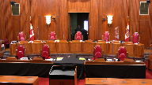
Oh, I see leaves as well.
Mr. Hassan.
Speaker 4 (01:27:02): Thank you, Chief Justice.
Good morning, justices.
Mr. Aylward and I will be dividing oral argument, going in a different order from the Crown.
I’m going to be first addressing the section 7 arguments, and Mr. Aylward will address the section 15 arguments.
Before I turn to section 7, however, I would like to make an overarching point.
It’s important to situate this case in reality and to not lose sight of that reality.
And the reality is that for decades now this country has faced a crisis of over-incarceration of indigenous persons, a crisis that’s only gotten worse since Parliament enacted section 718.2 E and the conditional sentencing tool in 1996, and it’s gotten worse since this court decided Gladue in 1999, and worse still since IPLE was decided in 2012, and still worse since the Truth and Reconciliation Commission released its calls to action in 2015.
And against that background of rising incarceration and over-incarceration, conditional sentences serve a vital function, allowing what are ostensibly jail sentences to be served in the community, breaking the cycle of community dislocation, family separation, and intergenerational trauma.
The impugned provisions, however, put conditional sentences out of reach in a huge number of cases, just as they did for Ms. Cheyenne Sharma, a young woman whose circumstances were such that the trial judge described them as a constellation of Gladue factors.
And we submit that the impugned provisions aren’t just bad policy, aren’t just counterproductive to reconciliation, but that they are unconstitutional under both section 7 and 15 of the Charter.
Turning to section 7, Justices, we have two section 7 arguments.
First, the impugned provisions are overbroad because the means chosen overshoot Parliament’s purposes.
Maximum sentence is a poor proxy for seriousness of a given offense.
And secondly, the impugned provisions are arbitrary in that they have the effect of removing the proportionate middle of the range of available sentencing options, forcing judges, in some cases, to impose sentences that are arguably either disproportionately too high or disproportionately too low, as the case may be.
And the result is an inconsistent approach to sentencing, which undermines rather than promotes Parliament’s purposes.
Now, dealing first with overbreath, the Crown and we are ad idem on the test for overbreath.
That overbreath addresses a situation where there’s no rational connection between the purposes of the law and some but not all of its impact.
And that’s what the Court of Appeal majority found here, that the impugned provisions were overbroad in respect of Parliament’s goal of ensuring that serious offenses are punished with jail.
And with respect to my friends, the Court of Appeal’s section 7 overbreath holding is a straightforward application of this Court’s fairly recent precedents from Bedford, Moriarty, to Safarzadeh-Markkali.
And indeed, we say highly analogous to Safarzadeh-Markkali.
Now, step one in the overbreath analysis is, of course, identifying the legislative purpose.
The Crown disagrees with the approach taken in the court below.
The majority says that the purpose is to maintain integrity of the justice system by ensuring that serious, sorry, by ensuring that offenders who commit serious offenses receive prison sentences.
The dissent agreed.
It was one of the few things that the dissent and the majority agreed on at the Court of Appeal, that this was indeed the purpose of the legislation.
And indeed.
Justice Moldaver (01:32:09): What about providing consistency and clarity to the, uh, conditional sentence regime?
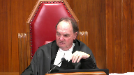
I mean, this wasn’t the first time Parliament took certain offences off the table.
Um, but in doing so, they created other problems, so there was lack of clarity.
And so Parliament chose this approach, which may not be the perfect approach, but it would certainly bring clarity to the situation.
I just say that it seems to me that’s another purpose, Mr. Hassan, but maybe I’m wrong.
Speaker 4 (01:32:44): Justice Moldaver, I would suggest that that approach of identifying clarity as the purpose of the provision would be inconsistent with the approach that this court has previously taken in identifying the legislative purpose of a given provision.
Bear in mind, Justice Moldaver, that this court has consistently emphasized that when you’re trying to identify the purpose, it’s not the, you’re not looking at the purpose of the overall scheme, but of the specific provision.
And further, Justice Moldaver, in Moriarty and Safarzadeh-Mercalli, this court emphasized that purpose needs to be characterized at the appropriate level of generality, which resides somewhere in between a statement of animating social value, which is too general, and a narrow articulation that amounts to a virtual repetition of the challenge provision divorced from its context.
And what I say to that, Justice Moldaver, is the nary purposes, which you’ve alluded to, which include providing consistency and clarity, this is in the nature of an animating social value, promoting safety, public safety, which was another one of the nary purposes, promoting consistency and clarity, emphasizing denunciation and deterrence.
These are animating social values that one might say are animating social values behind all sentencing legislation, particularly laws that make the sentencing scheme more harsh.
So how is that, how…
Justice Brown (01:34:31): How is that distinct, then, from ensuring that offenders who commit serious offenses do prison time?
Is that not stated at a rather high level of generality as well?
Speaker 4 (01:34:45): ensuring that offenders do prison time.
Who commit serious off.
Justice Brown (01:34:51): received prison sentences.
That was the purpose accepted, as you say, by both sets of reasons at the Court of Appeal.
I’m just not sure if the distinction that I accept that you’re drawing from the jurisprudence is capable of obvious application sometimes.
Speaker 4 (01:35:10): I appreciate, Justice Brown, that this is a test that does require a nuanced analysis, it requires a contextual analysis.
I appreciate that, Justice Brown, that this is a test that does require a nuanced analysis, it requires a contextual analysis.
I appreciate that, Justice Brown, that this is a test that does require a nuanced
Justice Rowe (01:35:21): I break out in a rash when I hear the word nuance, but that’s just me.
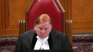
Because I’m one of those guys who really keeps it simple whenever possible.
I have to tell you that while the majority and the minority, and I may get the exact wording wrong, agreed that maintaining the integrity of the criminal justice system by ensuring prison sentences are ordinarily applied to certain serious offenses or something like that, I take the wording, maintaining the integrity of the criminal justice system to be an unnecessary and distracting rhetorical flourish.
That’s the kind of high-level, hortatory statement of purpose that gets us nowhere, that’s absolutely useless.
Whereas ensuring the prison sentences are ordinarily applied to certain serious offenses, that’s concrete, that’s specific, and that’s useful.
And it seems to me that that is really what the purpose is here.
And the stuff about the integrity of the criminal justice system is somewhat baroque and unhelpful.
Speaker 4 (01:36:36): I agree with that and accept that Justice Roe.
That’s the purpose of the provision.
What you described as baroque and unhelpful is pre-ambulatory.
I’ll accept that that is the statement of purpose to ensure that serious offenses receive jail time.
And indeed that is entirely consistent with what the parliamentary record shows time and time again when the minister and parliamentary secretary were discussing this legislation and we’ve included at tabs eight and nine of the condensed book examples of repeated references to the purposes of the bill where the Minister of Justice says this bill is very specific that with the most serious offenses within the criminal code you’ll not be eligible to go home afterward.
There are and will continue to be serious consequences and at tab nine later reiterating the point at the House of Commons our act would ensure that serious offenses including serious property offenses like arson would not result in house arrest.
This would ensure that jail sentences for such offenses are served in jail.
Justice Brown (01:37:56): from that excerpt was who was speaking there.
Overlapping speakers (01:38:01): Bye-bye!
Justice Brown (01:38:01): It matters right if it’s the minister then that maybe is authoritative if it’s the member for rainy river, you know, maybe not so much
Speaker 4 (01:38:10): Justice Brown, your point is duly taken.
The excerpts that we’ve included are focused on the minister.
Overlapping speakers (01:38:18): Okay, perfect, that’s good, thank you.
Speaker 4 (01:38:20): And indeed, also the excerpts that the Court of Appeal cites in the majority reasons also include excerpts from the minister.
So that is, I think, fairly clear.
Justice Jamal (01:38:35): Isn’t the distinction between you and the Crown much more specific, Mr. Hassan?
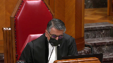
Because as I understand your argument, it’s that the legislation is overbroad because Parliament used the maximum sentence as a proxy for seriousness and could result in including sentences at the lowest end of the sentencing spectrum, and then you also add, including for some less serious offenses like counterfeiting and false advertising, as noted by Justice Feldman, the Crown says that all offenses, but for example drug offenses, are of a piece as being inherently all of them, even ones that end up at the lowest end of the sentencing range, they’re all serious and so there is no overbreath.
Isn’t that the key distinction between your respective positions?
Speaker 4 (01:39:17): It is, Justice Jamal, the key distinction between our respective positions, and we disagree with that.
We say that the height of the ceiling should tell you nothing about the height of the floor.
The fact that a serious offense can be committed by a theoretical serious offender who commits that offense in a very different way should not be used as a proxy to preclude someone who commits a lower level offense from receiving a fit and proportionate sentence.
That’s the essence of our argument, and that applies with equal vigor to section 742.1c and e2.
742.1c is the provision that limits the conditional sentence for any offense where the maximum sentence is 14 years or life.
That’s a tremendously broad spectrum, especially when we take into account the fact that subsection B of 742.1 already precludes a conditional sentence for offenses where there’s a constitutionally valid mandatory minimum sentence.
So what we’re really talking about are offenses where there’s a mandatory minimum of zero up to a maximum sentence of 14 years of life, and that is a huge number of offenses.
We’ve included in the condensed book at tabs 13 and 14 lists prepared by the federal government that identify some but not all of the offenses affected by subsection C, and they include the ones that Justice Cote referred to earlier, forging a passport and competition act type offenses like price fixing, false advertising, and deceptive telemarketing.
What these offenses, contrary to the crown submission, what these offenses have in common is not that they’re uniformly serious offenses, but that they’re broad spectrum offenses, meaning that they can be committed under along a spectrum of seriousness.
In some cases, borderline criminal, in some cases, extremely serious.
Fraud being a good example of that was alluded to earlier.
The point here is that just because someone can commit fraud by committing a billion dollar Ponzi scheme with thousands of victims over the course of a very lengthy period of time, shouldn’t preclude, constrain the sentencing options available for someone who commits a one time modest fraud of 5001.
That is the point here, but under this scheme, both are equally ineligible for a conditional sentence.
And given that, under the scheme that’s always existed and been embedded into section 742.1, that it had to be, it couldn’t be something where a penitentiary sentence would have been available, and it had to be consistent with public safety.
Given that those criteria always existed in there, the real important, the real effect of these impugn provisions is to deprive those committing offenses at the low level of seriousness of the potential benefit of the conditional sentence.
And manslaughter falls within this category, a broad spectrum offense, capture situations just sort of murder, extremely serious.
It also capture situations where the moral blame worthiness is substantially lower and we’ve included in our condensed book at tab 29, a relatively new case from the Ontario Superior Court, called George, Queen and George.
The court said George pled guilty to the stabbing of her sister’s abuser, who had just recently repeatedly assaulted her sister and her.
Miss George is an indigenous woman who herself had a disability and a young child who had special needs.
Separating the two of them would have only contributed further to intergenerational dysfunction.
And the trial judge emphasized in that case paragraph 63 that this is a case that underscores why conditional sentences are important.
And our submission is for someone like Miss George or Miss Sharma, it makes no sense to deprive them of this possible sentencing outcome, simply because there exists, theoretically, much more serious offenders who sentence would be 14 years or life.
Justice Moldaver (01:44:37): Our conditional discharges and absolute discharges out now too.
They’re constitutionally unsound.
Speaker 4 (01:44:49): Justice Moldaver, I take it that that you’re referring to the fact that conditional discharges also utilize maximum sentence as one of the criteria.
I take it that that’s the import of the question.
Let’s see.
Justice Moldaver (01:45:08): And the import of your submission is that they should go too, because I’m sure there’s lots of people, Indigenous and otherwise, low, you know, marginalized people and so on, who would love to have a conditional discharge, and it’s not available.
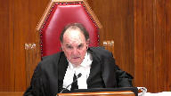
So, and that may impact on their ability to get jobs and so on and so forth.
You know, they’ll have a criminal record, but we’re just to ignore that, I guess, beyond what Parliament can do, because the same group of offences that you are now saying can be committed in so many different ways, applies to those as well.
So you know, either we’re going to give Parliament some policy leeway or we’re not.
I guess I would put to you a question, which is this, if Parliament chose to get rid of conditional sentences completely because they came to the view that they just weren’t working and it’s just not worth it and so on and so forth, they made a bad policy decision, I guess you would say they can’t do that.
Speaker 4 (01:46:24): Justice Moldaver, you asked two very important questions.
I’ll try to address them in turn.
First, with respect to conditional discharges and discharges.
First, I would point out that there is some distinction between that situation where we’re dealing with collateral consequences of a conviction versus a situation as stark as the one we’re dealing with here, where the deprivation of liberty is at its most serious, that being jail.
So that’s the first distinction.
The second point I’ll make is, Justice Moldaver, if I’m being completely candid, the import of my argument may apply equally in a challenge to the limitations on conditional discharges.
It’s going to depend on the legislative purposes that parliament had in creating those limitations, because over-breadth analysis is not about telling government whether what it’s doing is a good or bad thing.
Over-breadth analysis is about weighing the means chosen to the purposes of parliament and determining whether or not there is a rational connection.
And I’ll use that as a segue into answering your second question, Justice Moldaver.
Could parliament scrap conditional sentences altogether?
Mr. Aylward will have a lot to say on that with respect to section 15, but dealing strictly with section 7 over-breadth, the answer is yes, it could. It could.
Because over-breadth analysis doesn’t say what parliament is and what it isn’t allowed to do.
Over-breadth analysis is concerned with the asserted purposes of parliament and whether the means overshoot the ends.
And if the means, if the ends here were to deprive individuals of conditional sentences and insure jail for serious cases, the means aren’t rationally connected to the goal in a vast number of cases.
And that’s as true with section 42.1c as it is for 742.1e2, which although it’s focused on drug offenses, it also applies to broad spectrum offenses, as this court pointed out in Lloyd.
And so, so kind of
Justice Rowe (01:49:04): You
Justice Rowe (01:49:04): Well, some council are going to say to us, this is just a business as usual case.
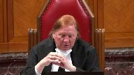
There’s no big implications.
This has all been sorted out.
It’s just the application of things that are well settled.
These aren’t the droids we’re looking for, just let us through kind of thing.
I know I stole it from Justice Brown.
But to get to the point, it seems to me that what you were saying, which I think is an accurate way in which it’s consistent with what you’ve laid out in your materials and your line of argument, this really is quite a large case, which has very significant and broad implications.
That’s what I’m getting from you now.
Speaker 4 (01:49:50): Well, I think in terms of applying established legal principles and precedents, I think it’s a straightforward application, particularly when it comes to Section 7.
This case, I would submit, Justice Roe, is highly analogous to the Court.
The majority’s approach in the Court below is highly analogous to the approach taken by this Court and Safarzadeh-Marcalli, a unanimous decision.
But no, Justice Roe, I can’t deny that there are broad implications arising out of the majority’s decision with respect to both Section 7 and Section 15.
We don’t deny that for a minute.
Justice Moldaver (01:50:32): While we’re on that, I just, and maybe this is more for Mr. Allwood, I’m not sure, but where does this end?
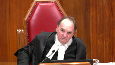
If Parliament wants to raise the tariff for child abuse or any other crime that we can think of, so they raise the penalties, now that of necessity is going to mean, it seems to me, that more people are going to go to jail, including Indigenous people.
So are we effectively going to say that Parliament has to weigh every time it wants to say, you know what, this is a serious crime, we want to raise the level because we don’t think trial judges are imposing strict enough sentences and so on.
I mean, just take Friesen, take all that whole jurisprudence.
I mean, in doing what we did in Friesen, frankly, more people are going to go to jail.
So maybe what we did in Friesen is unconstitutional too.
I mean, I don’t know where this ends.
I really don’t know where it ends, and it seems to me you are effectively hobbling, trying to hobble Parliament from doing really making any sort of policy decisions that might end up with more people, including Indigenous people, going to jail.
That’s how serious I see this case as.
Others see it as just commonplace.
Speaker 4 (01:52:06): Justice Moldova, I don’t think anyone sees this as commonplace.
I think everyone is alive to the tremendous implications on both sides of the aisle.
But I’ll answer the question, your Friesen question, with respect to Section 7.
And I’ll leave Mr. Aylward to talk about it from a Section 15 perspective.
No, from a Section 7 perspective, we’re not saying that what was done in Friesen is wrong.
And Parliament, from a Section 7 perspective, Parliament is free to raise maximum sentences, as it did in Friesen.
And I appreciate that the Crown relies on Friesen for the primacy or relevance of maximum sentences.
But the Court in Friesen didn’t do what the Court is urging, what the Crown is urging this Court to accept here, which is that Friesen stands for the proposition that maximum sentences can be a necessary and sufficient proxy of seriousness.
Maximum sentence is relevant to the range.
We don’t doubt that.
But it’s one thing to say that maximum sentence is relevant to informing the range and the discretionary mix that goes into a sentencing court’s analysis of the law.
Justice Moldaver (01:53:31): This court, this court has said it’s an objective, it’s an objective yardstick.
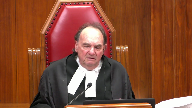
We said it, we’ve said it several times.
Lacasse, it says it, other cases, it’s an objective yardstick as to seriousness.
So I, I mean, what does that mean?
We just ignore that and say you can’t do that, you can’t use this objective yardstick in Parliament because some of the crimes may be treated less seriously in certain circumstances.
Speaker 4 (01:54:03): I’m not disagreeing with Friesen or Parenteau at all.
It’s an objective yardstick.
It informs the seriousness of a range.
But that is a very different thing from saying that the maximum sentence can be the be all and end all and dictate sentencing outcomes, which is the import here.
It’s one thing to say that a maximum sentence for importing a schedule one substance is greater than the maximum sentence for importing a schedule three sentence.
Therefore, all things being equal, importing a schedule one substance is the more serious offense.
But it’s a completely other thing to say, well, because the max sentence is for importing a schedule three substance is lower than the max sentence for importing a schedule one substance, then the drug kingpin involved in schedule three substance importation is at a different level or a lower level of seriousness than someone like Ms. Sharma, who committed this offense under a one-time offense under circumstances of economic.
Let’s not confuse the seriousness of the offense
Justice Moldaver (01:55:23): of the crime with the very disturbing personal characteristics and background and so on.
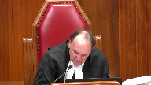
I think, Justice, the Court of Appeal made that quite clear recently in Morris and before that in Hamilton.
Are you taking offense to that or what?
Speaker 4 (01:55:43): No, Justice Moldavar, let’s take, even if we take out individual personal characteristics, which are, of course, important.
But the point I’m making here is that Friesen doesn’t stand for the proposition that maximum sentence alone can dictate the seriousness of the given offense.
It is a factor that informs the sentencing judge’s discretion, and that’s what Friesen stands for.
What’s going on here is something far different, where whereas sentencing court’s discretion is limited based on the theoretical most serious offense that can be committed within the rubric of that particular offense.
That’s what I’m saying, and that’s why this is different from…
Justice Moldaver (01:56:32): I wonder why there wasn’t a challenge to these things right off the bat when Parliament said they’re only available if the sentence would be two years less a day.
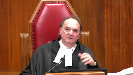
I mean after all, the difference between that and two years and six months, my goodness, that’d be a lot more people who wouldn’t have to go to jail if it was two, two and a half years or three years or five years.
I mean where do we…
Overlapping speakers (01:56:56): We draw a line.
Justice Moldaver (01:56:57): on this or do we just take all policy considerations that Parliament takes into account and say there could have been a better way, there would have been more people kept out of jail if they’d made it three years and therefore, you know, there’s obviously marginalized groups and Indigenous people and so on are going to have to go to jail when really if it was three years, you know, a lot of them would not have to go to jail.
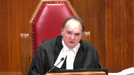
I’m not trying to be silly or facetious here.
I’m just trying to figure out where we draw a line on what Parliament can do and can’t do in the criminal law.
Speaker 4 (01:57:36): I would never suggest, Justice Moldaver, that you are being silly, and I’m trying to answer your question as best I can.
I think the answer lies in the over-breadth analysis.
I mean, I’m not saying, we’re not saying that Parliament can’t do these things.
What we’re saying is that Parliament must be held to account, and when it says it’s doing something for a specific purpose, the courts are duty-bound to determine whether or not the means chosen are rationally connected.
That’s the point here.
So there’s any number of ways from a Section 7 perspective that Parliament could have and can amend the conditional sentence regime.
It just hasn’t done so here.
I see that I’ve now taken up more than 30 minutes of time.
Given the importance of the Section 15 issues, I’m going to rely on our factum for the arbitrariness argument, and I will turn things over now to, barring any other questions on Section 7, I’ll turn things over now to Mr. Aylward.
Justice Wagner (01:58:43): Thank you very much.
Speaker 5 (01:58:46): Thank you, Chief Justice.

I’d like to begin by defining what the Section 15 claim in this case is and is not about.
And in particular, I’d like to respond to a comment made by Mr. Wernickowski in his submissions that Ms. Sharma’s argument on Section 15 has shifted over time.
That simply is not the case.
Ms. Sharma’s argument was before Justice Hill at the Court of Appeal, and today, always focused specifically on the connection between Gladue and conditional sentences.
She has never argued that the impugned provisions violate Section 15 solely because they have a numerically outsized or disproportionate impact on Indigenous offenders.
That’s very likely true, but it’s not the basis of the Section 15 claim here.
And I’ll just give you the reference.
You’ll see this if you look at the transcripts of the sentencing hearing, but the easiest place to see this is in the factum filed before the sentencing judge, and I won’t take you there, but the reference is in the Court of Appeal Appeal Book, Volume 3, Tab 17, and in particular, Paragraph 75 is a good encapsulation of it.
The argument has always been the same.
The Crown, from the beginning, has mischaracterized her argument as being about a statistical adverse effect, and unfortunately, the sentencing judge bought into that error.
That was corrected at the Court of Appeal.
Both the majority and the dissent properly appreciated the nature of the Section 15 claim that Ms. Sharma had been making, was making.
In that argument, statistics are important.
They play a role in providing context and informing the analysis, although they aren’t the heart of the claim.
The statistics are relevant because they explain the need for the GLEDU framework in the first place, and so they inform the significance of restrictions on that framework.
Those statistics paint a very grim picture, and one that’s only gotten worse.
Today, 31% of admissions to Provincial Territorial Custody are for Indigenous offenders.
As Justice Kerikatsanis pointed out, the figures are worse for women Indigenous offenders.
Aboriginal Legal Services point out in their fact in a recent study that shows that Indigenous persons in Canada today are nine times more likely to be in prison than a non-Indigenous person.
Obviously, Indigenous over-incarceration is a complex problem, and one that has many causes.
Justice Brown, you pointed out what sentencing courts are able to do about it is going to be constrained.
But one of the causes of the problem today is found in the criminal justice system itself.
That the sentencing process has exacerbated the unequal treatment of Indigenous offenders.
This court recognized that in GLEDU, again in Eapley, and more recently in Ewart.
Section 718.2 sub e was introduced by Parliament in order to combat discrimination in the sentencing process.
That’s what this case is about.
Justice Rowe (02:03:01): Well, I wonder whether that is really accurate in this sense.
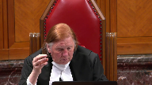
I don’t say the parliament was unmindful of that, but another way of viewing it is that while sentences to be fit need to take into account the seriousness of the offense and the circumstances of the offender, historically there had been a failure to adequately have regard to the circumstances of offenders who were indigenous, who bore certain burdens and had certain difficulties inflicted upon them on a systemic basis.
And one way of looking at it is that parliament simply said judges, in taking into account the circumstances of the offender, take into account those broad societal factors and the impact on this individual, which is a little different from, I think, from what you’ve said, although I don’t want to just play with words.
Speaker 5 (02:04:13): I accept that Justice Roe and perhaps I had in mind a broader conception of the sentencing process that really what section 718.2 is about is substantive equality in this in the sentencing process as the Ontario Court of Appeal held in the Leonard case, that it’s about recognizing that courts need to pay particular attention to those particular social and economic disadvantages facing indigenous offenders, and that a failure to do so will perpetuate an unequal treatment by the courts.
Justice Moldaver, your question, where does this end?
I think that question really depends on getting straight what the nature is of the section 15 argument in this case, because we are not arguing that any stiffening of penal laws will be a violation of section 15 because it has a disproportionate impact on indigenous offenders or other marginalized groups.
Justice Moldaver (02:05:23): All right, just let me stop you for a moment.
Do you disagree that if Parliament raises the sentence on various crimes, more people are going to go to jail?
Overlapping speakers (02:05:34): I agree with that.
Justice Moldaver (02:05:34): And some of those more people will be Indigenous people. Agreed.
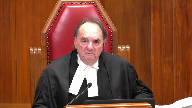
So, therefore, what?
Parliament will be exacerbating an already horrific situation by raising the tariff on whatever offence it might be, and therefore they can’t do it because then they are undermining the…
I don’t know.
They’re undermining the conditional sentence regime or something.
I just don’t…
I mean, they’re undermining the notion that really what this is all about is to reduce the number of Indigenous people in jail.
And you disagree with me that it would increase the number of Indigenous people in jail.
Justice Moldaver (02:06:24): So is that the next challenge?
Speaker 5 (02:06:29): um that’s a fundamentally different argument from the one we’re making.
I don’t think what this court does in this case frankly would make that challenge more or less likely to succeed because I think it depends on a completely different application of the section 15 test.
It would require looking at the again whether there was a distinction and the perpetuation of disadvantage uh along those lines.
That would be a much harder case for the claimant to make out.
It was a claim that was tried and failed in the Noor case at the court of appeal rejected by the majority uh or the uh unanimously by the court of appeal in Noor and it’s not the argument that we’re making here.
This court could accept the argument that we’re making and still find that parliament is free to increase maximum sentences, that it’s still free to increase even mandatory minimum sentences because those were never part of the conditional sentence framework.
They were excluded from the get-go from the scope of section 742.1.
Justice Brown (02:07:41): But I think you’re, I mean, for obvious reasons, you’re minimizing the potential implications of what you’re asking us to do here.
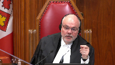
If we accept, as the Court of Appeal did, that the distinction relates back to the disadvantage, disadvantage, right, the majority says that the distinction relates to the over-incarceration of aboriginal offenders, would it not follow that the example that Justice Moldaver gives effectively means that increasing a sentence, increasing, for what we did in Friesen, or if Parliament were to increase a maximum sentence, which you say would result, and I think it logically follows in the incarceration of more indigenous offenders as well as non-indigenous, would it not follow that that’s not constitutionally possible if we accept that this isn’t constitutionally possible?
Speaker 5 (02:08:50): So I don’t think that’s a fair reading of the Court of Appeal, the majority’s reasons as a whole, that the Court of Appeal wasn’t saying that the distinction flows automatically from the pre-existing disadvantage of Indigenous offenders in the criminal justice system.
The distinction is tied specifically to the exclusion of certain Indigenous offenders, like Ms. Sharma, to the full benefit of a Gladoux analysis of the protection of Section 718.2 sub e.
In that sense, the heart of the Court of Appeal’s analysis, as we see it, is the analogy to the Allianz case, where Parliament, in that case, the provincial legislature, had enacted anti-discrimination measures that a law that rolled back those provisions without making alternative provision for the circumstances of the affected group triggers review under Section 15.
Justice Karakatsanis (02:10:04): So…
Overlapping speakers (02:10:04): So what’s-
Justice Karakatsanis (02:10:04): As your answer to the question that was posed earlier, would Parliament be able to eliminate conditional sentences altogether?
Speaker 5 (02:10:18): So that, I think, is directly on point to the Alyos case.
And it’s the response to my friend’s point as well that the analysis of the majority below constitutionalized conditional sentences, we don’t say it did.
And we don’t think that’s a necessary implication of the court’s analysis.
That the reforms in 1996 brought in a certain level of protection for equal treatment, to enhance the equal treatment of Indigenous offenders in the criminal justice system.
The particular form of that protection is not constitutionalized.
And that’s what Justice Abella said by analogy in Alyos at paragraphs 33 and 35.
What matters isn’t the form of the legislation, in this case, conditional sentences being the tool that’s available.
What matters is the substance of the experience of Indigenous offenders in the criminal justice system.
If Parliament wanted to completely repeal conditional sentences, they’re free to do so.
They would have to either introduce a substitute mechanism designed to address the problem of Indigenous over-incarceration to ensure that they weren’t making the crisis worse by disconnecting the fire hose in the middle of a fire.
Or they would have to justify that under Section 1.
And I agree with Mr. Wernicowski’s submissions on this, that the import of this court’s Section 15 jurisprudence since Quebec versus A in 2013 has been to shift the burden increasingly onto the state to justify discrimination at the Section 1 stage.
That’s not a radical result.
It means that Section 15 would be treated more like Section 2B, where there’s no internal limit on the right on the front end, and more work is to be done at the justificatory end by the state.
Now, in this case, it’s very difficult for the state to justify the.
Justice Rowe (02:12:49): You see, that’s delineation by justification.
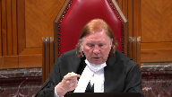
That methodology is, if you give it an extraordinarily broad sweep to the statement, the scope of a charter right, and then you say, now, state, justify your infringement.
And so the whole analysis of the scope of the charter right, it’s almost like it disappears.
You say, well, that’s not really what this case is about.
It’s about the justification.
But logically, you have to ascertain the scope of the right to determine whether there has been an infringement.
And what all of this suggests is that the, the scope of the right is so broad that any change of this nature would ipso facto constitute an infringement, and therefore, we’re into justification under section one and the critical portion of that is the proportionality component, the balancing, which is a policy-laden exercise in which the judges express their view of policy and essentially are open to substituting their view for that of parliament.
That’s the consequence of saying that this is really about section one, not about the scope of the right.
Speaker 5 (02:14:18): I don’t think the Fraser test to Section 15 writes Section 15 out.
It means there’s more work to be done at the Section 1 stage, but Section 15 does still play a meaningful role in the analysis.
Really, it’s a return to this Court’s unanimous decision in Andrews of Justice McIntyre for the majority on the Section 15 analysis that any law that draws a distinction based on an enumerated or analogous ground that is discriminatory, which he defined in that case as meaning imposes a disadvantage or prejudice on the affected group, amounts to a violation of Section 15.
Justice Moldaver (02:15:01): Where this takes us, I apologize for interrupting, Mr. Elwood, and your time is limited, but I just got to get this straight in my head.

You’re taking two pieces of regular legislation, neither of which are constitutionalized, conditional sentences and the provision that says, you know, we’ll take all reasonable steps to avoid jail and particularly in the case of indigenous offenders.
You’re taking two sections that are not constitutionalized, they’re regular legislation, and it seems to me that what you are doing in the end is really constitutionalizing them and saying you cannot parliament, you cannot repeal those, you cannot modify them unless you come up with something different.
And that seems to me to be a fundamental concern, certainly for me, because as you know, in Sephardi-McCally, this court said that proportionality in sentencing is not a fundamental principle of justice.
So it seems to me that you’re taking, and in that case, they said parliament can abrogate or modify any existing legislation, including anything in 718, but it seems to me now they can’t.
You’re in effect saying no, you can’t.
You can’t abrogate.
You can’t modify unless you put something else in.
And this is where I’m seeing a big, dangerous disconnect here.
Speaker 5 (02:16:35): When analyzing the effect of state action, in this case, enacting section 742.1 sub c and e2, we have to look and measure the effects of that state action against the law as it existed at the time.
And that includes by reference to other statutory enactments.
I don’t think there’s anything unusual or novel in that.
And it can be seen in this court’s decisions in Allianz, most obviously with respect to pay equity provisions, but also in G in Ontario, where the court said, well, hang on to the Attorney General of Ontario.
You couldn’t just repeal the exit ramps for everybody.
That would also be subject to scrutiny under section 15.
Or indeed, in the case in CP, when the court looked at the, found that there was a residual liberty interest in a statutory appeal right, the right to an appeal is a creature of statute.
But nonetheless, the court looked at that against the background of the existing legislative framework.
Overlapping speakers (02:17:46): So I think your answer to Justice Moldaver is yes, that’s exactly what we’re saying.
Speaker 5 (02:17:51): I think that’s fair.
We are saying that not that it constitutionalizes it, that we would resist, it doesn’t constitutionalize the form of any particular legislation, but it…
Well, until you legislate it, it’s not going to be a problem.
Justice Brown (02:18:03): until you legislate it and and then you try to amend or modify or repeal it then in fact it does I mean this is the this is the ratchet that that you refer to then it does undergo a constitutional analysis I mean whatever constitutionalizing means surely it means that it cannot be modified amended or repealed without passing a constitutional test other than the old-fashioned first second third reading
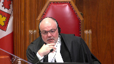
Speaker 5 (02:18:29): maybe we’re just disagreeing about semantics, I’m saying it’s not constitutionalized in the sense that any change to the provisions has to be justified under Section 1.
We do say it would be subject to constitutional scrutiny in the sense that any change triggers an analysis of whether it exacerbates pre-existing disadvantage.
Justice Brown (02:18:53): Right right so and that may take you to section 1 or it may not depending on the initial outcome at section 15 but
yes but
okay
so I think your answer to justice moldy
yes that’s exactly what we’re doing yeah.
Justice Karakatsanis (02:19:06): Can I ask you this, because in Allianz, the court said that when you’ve got an ameliorative program, you’ve got to do it in a way that’s not discriminatory.
Do you read that case as saying that you can’t repeal it altogether?
Speaker 5 (02:19:27): that if you repealed it all together in circumstances where that was going to throw the protected group back into the experience of unmitigated discrimination, then that’s how we read Allianz.

I would add just one thing to that analysis, which is one particular feature of this case, which isn’t necessarily present in other cases involving repeal of ameliorative programs.
And that’s that the discrimination at issue in this case faced by indigenous offenders in the criminal justice system isn’t a phenomenon that can be divorced from the actions of the state.
In that sense, it’s not preexisting in the way of some other types of historical disadvantage might be.
The discrimination faced by indigenous offenders in the criminal justice system in Canada is deeply rooted in state conduct.
And the David Asper Center will address that point further.
But there’s a distinguishing feature there, that for parliament to repeal or undermine, in this case, an ameliorative program like the Gladue framework, where it itself has been a primary contributor to the underlying discrimination that then is going to be unmasked, that that is a particularly serious form of this issue, where it’s a stronger case even than the Allianz case was.
Justice Moldaver (02:21:14): But just a minute, no one’s undoing LaDue here.
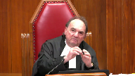
I mean, your client, with great respect, and I know the enormous problems she had, but quite frankly, she got a sentence in large part because of her, in something that would have been available, that is taken away from the conditional sentencing regime, because Parliament has made certain choices here that said, look, this is getting out of hand.
There’s too many people getting conditional sentences that shouldn’t be, so.
Speaker 5 (02:21:52): You’re certainly right, Justice Moldaver, that the Gladue framework did significantly come into play in this case in reducing the sentence that Ms. Sharma would have faced.
But the restrictions removed one available option, but it was a particularly important option in the context of the Gladue framework, because it was the only option for Ms. Sharma that could have resulted in her serving a sentence in the community.
And that really is core to section 718.2 sub e, because it’s a community-based sentence that is the only option that would interrupt the cycle of dislocation of having Ms. Sharma, an intergenerational survivor of residential schools, separated from her young daughter, removed from her community and cultural connections to her community, and avoiding the possibility of giving effect to a form of sentence that is more coherent with indigenous conceptions of sentencing, as this court held in Gladue.
And so we say the conditional sentence is special.
It’s on its own footing.
Thank you for your attention, and we’ll see you in the next one.
Justice Moldaver (02:23:08): What do you say about the fact that when conditional sentences were brought in, and in the first case this court dealt with and proved, they effectively said, all right, here are the, here’s the situation.
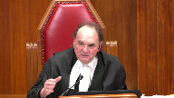
And it’s got to be the type of crime, it seems to me, that is one of the more lesser crimes that does not sort of impact on the overall, you know, protection of society, it’s a relatively, relatively minor, how could we possibly say that bringing in two kilograms of cocaine would ever get you a conditional sentence?
Speaker 5 (02:23:45): Well, if you look at the case that the Crown relies on, which is Mason and Hamilton, which indeed had sympathetic facts, but what Justice Doherty said at paragraph 113 of that case wasn’t that conditional sentences would never be available for importing cocaine, but that it would not be appropriate in the vast majority of cases.
And we accept that.
But we say that this case, when looked at in the context of the circumstances of Ms. Sharma, that this case did meet that threshold and that it was an appropriate sentence for the Court of Appeal to substitute. Exactly.
I see my time.
Justice Jamal (02:24:25): You
Justice Moldaver (02:24:25): Do you have the exact words of Chief Justice Le Maire in Prue?
I don’t have them before me, but sort of the basic conditions that were meant to apply before you could get a conditional sentence.
Do you have those?
Speaker 5 (02:24:40): I believe he had he had those from the text of the legislation itself of having to be consistent with the public interest.
I’m afraid I don’t have the exact passage.
Justice Moldaver (02:24:52): But you agree that they were primarily designed for, you know, not serious crimes like bringing in two kilograms of cocaine?
Speaker 5 (02:25:07): They weren’t primarily designed for more serious offenses, although as the court pointed out in Prue, there was no presumption against the use of conditional sentences for more serious offenses.
And further in Gledew, the court explained and reiterated in IPLE that the Gledew analysis applies to all offenses regardless of how serious.
I see I’m running low on time.
I’d just like to make one final point, and that’s just on the connection between section 718.2 sub e and section 742.1.
My friends take issue with us saying that these provisions are interconnected.
We say it’s really not a point that can be seriously disputed if you look at the history of the provision for parliament and the statements of this court in Gledew, but more so even in Prue.
And we’ve given you those excerpts in the condensed book.
Parliament clearly could have enacted the two provisions separately, as Mr. Rankin pointed out in his careful analysis of the legislative history.
There were predecessor bills that had different constellations of one or not the other, but the important thing is that parliament chose to enact both provisions together because they work better together to have a directive in 718.2 sub e and then a way to meaningfully carry that out in cases of Indigenous offenders like Ms. Sharma in section 742.1.
Overlapping speakers (02:26:44): Thank you very much.
Speaker 5 (02:26:45): to any further questions those are my submissions.
Thank you.
Justice Wagner (02:26:50): Mr. Rudin.
Speaker 6 (02:26:53): Chief Justice, Justices, I want to begin by noting that today is 10 years to the day since this court issued its decision in IPLE.
And if we look back a bit further in Gladue this court began by looking at Canada’s incarceration rate per 100,000 people and that Canada ranks second or third to the US and as this court said at the time quote this cannot instill a sense of pride.
Later in that judgment and then in IPLE indigenous incarceration rates were examined and as you know in Gladue this court said that rates of indigenous over representation were a crisis and in IPLE facing ever increasing rates this court was at a loss for words.
The work of Sprott, Webster and Doob whose paper is referenced in our Factum offers a new and more accurate term to describe what is happening to indigenous people today and that term is mass incarceration.
The study compared non-indigenous and indigenous rates of incarceration per 100,000.
In 2017-18 the non-indigenous rate was 79 a 20 percent decline from 1996.
In contrast the indigenous rate was 677 a 33 percent increase from 1996.
As Mr. Elwood noted indigenous Canadians are now nine times more likely to be imprisoned than non-indigenous Canadians and the indigenous incarceration rate if we compare that to the US rate for the same year indigenous rate is actually slightly higher.
America is the leading example of mass incarceration in the industrialized world.
The fact that indigenous rates are even higher than the US means that mass incarceration is the only term that can adequately describe what is happening to indigenous people and to paraphrase this court from good do this fact can only instill a sense of shame.
Now the appellate states that the court of appeals decision in this matter impinges on the doctrine of parliamentary supremacy and there’s been a lot of discussion here today about the fact that somehow this decision will prevent parliament from ever increasing maximum sentences and we say that is incorrect and
Justice Moldaver I want to specifically refer to Friesen in this discussion as well.
Now firstly this case is about a law that requires a judge to impose a disproportionate sentence of incarceration on an indigenous offender because the proportionate non-custodial sentence a conditional sentence is prohibited.
Now this does not mean that parliament can never raise the maximum sentence and we point out in our factum that in 2019 the over 125 summary conviction offenses were raised the maximum was raised to two years less a day and nothing makes that unconstitutional and the reason is because the option of a conditional sentence always remains.
It’s not the case that indigenous person who receives an eight month sentence for a summary conviction offense that previously had a maximum of six months could now bring a charter challenge because the eight month sentence would be the proportionate sentence.
What matters is that the judge doing the sentencing has a CSO as an option if it is appropriate and that’s the significance that’s what’s important in this case as long as the CSO is a possible sentence there’s no problem.
Now Justice Moldaver in Friesen this court clearly said courts needed to take the issue of sentencing for child sexual offenses more seriously but at paragraph 92 of Friesen this court said that this did not mean that the due process was attenuated and it did not mean that if it was an appropriate sentence a CSO is not possible.
So this is not preventing parliament from raising maximum sentences not at all
and it doesn’t prevent this court from raising sentencing ranges.
What it means is we have to be concerned about ensuring that where a proportionate sentence for an Indigenous person requires a CSO that that’s available and my last point in this is the other thing we can’t forget and the crown used to determine their factum forever restricting parliament.
To say that parliament can never do anything as a result of this decision assumes that the mass incarceration of Indigenous people will always be with us and we refuse to believe that and we refuse to believe that that will be the case this court and parliament has said it will not be the case.
And once systemic discrimination vanishes from the criminal justice system then parliament is free to do whatever it wants but asking that parliament that the legislation not exacerbate existing systemic discrimination against Indigenous people we submit is not too much to ask.
Thank you, miigwetch.
Justice Wagner (02:32:10): Thank you very much.
Speaker 7 (02:32:26): Thank you justices.
Justice Wagner (02:32:30): Yes, go ahead.
Speaker 7 (02:32:32): Thank you.
It is not often that perspectives from Nunavut are heard in this honourable court
and so it is for me a great honour to present one such perspective today.
That is the perspective of Defence Council working on the front lines of justice in Nunavut.
Our submissions are directed towards the second step of the Section 15 analysis.
For us, the issues on this appeal are not abstract or theoretical.
Nunavut’s population is 85% Inuit and Inuit make up an even larger percentage of those embroiled in the criminal justice system.
Every day, the Nunavut Court of Justice imposes sentences on Inuit offenders.
To do so fairly, Nunavut’s judges must apply gladu, including by considering the unique sentencing options that are appropriate given the Inuit identity of the people appearing before them and the relevant Inuit societal values at play in their communities.
Yet our court’s ability to do this is often undermined by the limits to the conditional sentencing regime that are at issue on this appeal.
Since the Safe Streets and Communities Act passed into law, the percentage of sentences in Nunavut that are custodial has increased by 5%, while the percentage of sentences that are conditional has decreased by nearly the same amount.
In other words, as access to the sentencing tool aimed at remedying the over incarceration of Indigenous Canadians has been curtailed, the actual incarceration of Inuit offenders in Nunavut has increased.
Today, Nunavut has the highest incarceration rate in Canada, more than five times the national rate.
Of course, these statistics are only one measure of this law’s discriminatory impact on Inuit Nunavummiut.
Nunavut’s colonial history, vast geography, and robust Inuit legal order provide important context for understanding how the impugned legislation undermines gladu and thereby perpetuates the disadvantages and discrimination faced by Inuit Nunavummiut.
The recent colonial history in Nunavut was manifest in large part through forced settlement of Inuit, a physical severing of the people from the land, which is echoed in the removal of Inuit offenders from their home communities when they are sent to jail.
Nearly three quarters of Nunavummiut live at least one prohibitively expensive flight from the closest correctional facility.
This means that jail sentences that could, absent this legislation, be served in the offender’s home community, instead physically remove offenders from their support networks, including the elders and counselling opportunities unique to each community that are so often essential for rehabilitation.
The legislation has an outsized impact in Nunavut, which, like other predominantly Indigenous jurisdictions, does not have a functional intermittent sentencing program, does not have culturally appropriate institutional programming, and does not have meaningful reintegration supports.
Limiting the availability of conditional sentences also interferes with the exercise of Inuit kayyema to kayyemit, what is often translated as what Inuit have always known to be true.
Just as the impugned legislation frustrates the exercise of judicial discretion, it also narrows the space available for the exercise of Inuit societal values, which have traditionally privileged community involvement in dealing with wrongdoers.
That involvement, which shares characteristics with what is elsewhere called restorative justice, is central to the remedial purpose of section 718.2 sub e in Nunavut.
Against this backdrop, the Legal Services Board of Nunavut asks this honourable court to affirm the importance of conditional sentences to the Gladue framework.
Additionally, for those of us standing where the rubber meets the road on Gladue, it is time for stronger direction from this court.
Sentencing judges should be required to justify every decision to incarcerate an Indigenous offender if a conditional sentence is legally available.
And the Crown, rather than the offender, should bear the onus of establishing what is reasonable in the circumstances.
Finally, it is our position that determining what is reasonable in the circumstances must include consideration of the relevant Indigenous legal orders, available resources, and geographic realities.
Thank you for hearing my submissions.
Justice Wagner (02:37:39): Thank you.
I promise.
Speaker 8 (02:37:46): Thank you.
Good afternoon, Chief Justice and Justices.
I will focus on four reasons why the trial judge was wrong to hold that the restrictions on conditional sentences are constitutional because, as he believed, suspended sentences were a, quote, appropriate alternative.
There’s four reasons why this is wrong and the first is that it’s a legal error to treat a suspended sentence and a conditional sentence as the same or to replace one with the other, and to quote this court respectfully to do so would be absurd, as this court noted in proof.
Significantly and not acknowledged I would argue by the Crown today is that the difference in objectives sentencing objectives that exist between a conditional sentence and a suspended sentence are suspended sentences focused on rehabilitation and probationary terms are meant to help rehabilitate the offender and conditional sentence is meant to denounce and deter.
So, in the leading case on the, this particular issue long at paragraph 62 says the court is not enabled to impose an unfit sentence in an attempt to replicate an unavailable sentencing option a conditional sentence is a jail sentence that is served in the community, a suspended sentence and probation are not our factor focuses on a number of cases that speak to this issue at paragraph nine and.
Significantly, there are a number of courts that say, you know, if I could give you a conditional sentence, I would but I can’t sorry I have to send you to jail.
And as recently as 2019 prior to Sharma cases are were unfortunately sending people to deal when they wish that they have an alternative.
So, to my second point, the trial judge unfortunately ignores the fact that we’re conditional sentences aren’t available courts are not giving suspended sentences instead first because that’s not legal and second suspended sentences are only reserved for the rarest of cases when we’re talking about offenses under, under the impugnant provision.
Justice Moldaver (02:40:15): interrupt, but you said that suspended sentences aren’t legal.
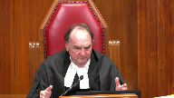
I don’t know that they’re not legal.
I think that, and I don’t know other cases where somebody’s tried for a suspended sentence in the circumstances of the, of the, you know, Ms. Sharma and gone through all this again.
I mean, you know, Pruill goes back 20-some years or whatever.
Maybe what you’re really saying is that we should rethink our sentencing rules, shall we say, as to what conditional sentences can and cannot be used for in the context of an Indigenous offender or some other group that has been, you know, badly, badly treated.
I mean, has anybody tried this?
Speaker 8 (02:41:08): Yes, you said conditional sentences just there, but did you mean suspended sentences?
Should we be looking at the way that suspended sentences are allowed to be used?
Yeah, was that your question?
Justice Moldaver (02:41:19): I’m just, you’re quite right that in Pruill said we really shouldn’t be using suspended sentences because this conditional sentence is real punishment, going at home, staying at home.
Overlapping speakers (02:41:29): That’s real.
Justice Moldaver (02:41:29): punishment. Right.
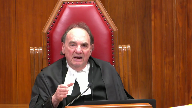
But you know that is court-made law in its own way.
Has anybody tried to say wait a second we need to review that in light of the gross disproportionality of the number of Indigenous people in jail.
Take a look at this again Supreme Court of Canada and see if you didn’t get it wrong in rule.
We’re not wrong but things have changed so make an adjustment.
Speaker 8 (02:41:59): I wholeheartedly agree with you Justice Muldiver and what I would say then is you have the court has a number of cases you know about 60 cases that I reviewed about what the jurisprudence looks like on this issue across the country.
So if this court is prepared to opine on that and to direct sentencing judges across the country to use suspended sentences differently than they have been sort of directed to up to this point I certainly would invite the court to do that and I think we could do that in this case because we have this issue before you.
And one point I just want to say about something you said Justice Muldiver that referring to Miss Sharma’s circumstances that they are they don’t come close to anything that most people would experience and
and so the court took that into consideration in giving her a uh an 18-month sentence.
I wholeheartedly agree with you that most people’s experiences will never come close to this however the most distressing issue that I I view with respect to the material and the fact of and on this point Your Honour uh Justice Muldiver is that um the courts are saying because we see these tragic circumstances so often we are now learning more and more about colonialism and the effects and we’re reviewing political reports and we’re seeing this tragic circumstances they are tragic and sympathetic but they are not and I’m quoting a Manitoba Court of Appeal decision from 2019 they are not so unusual as to be exceptional and so therefore no you can’t have a suspended sentence and that’s McIver that that that case is quote paragraph 11 of our um material Justice Muldiver. So
Overlapping speakers (02:43:54): Bye!
Speaker 8 (02:43:54): I agree most people in Canada would never come close to such tragic experiences as Ms. Sharma, but as an Indigenous person myself, an Indigenous lawyer serving a lot of Indigenous people, I see these circumstances regularly.

And so, unfortunately, so did the courts.
And that’s because of colonialism and systemic discrimination.
So the way that the jurisprudence works right now on suspended sentences is that folks who have these tragic circumstances are precluded from receiving the suspended sentences because the case law says, and the test is, you have to be…
Overlapping speakers (02:44:29): I think you’ve answered my question.
Thank you so much.
Speaker 8 (02:44:35): Thank you.
Justice Wagner (02:44:36): C’est très bon.
Speaker 9 (02:44:40): Merci Monsieur le juge en chef.
Les représentations de la CAD se concentreront sur l’article premier de la charte et plus particulièrement sur le volet de la proportionnalité ultime, donc de sous-peuser les effets néfastes ou préjudiciables par rapport aux effets bénéfiques.
Et ultimement, ce que la CAD souhaite soumettre, c’est que les effets préjudiciables dépassent largement significativement les effets bénéfiques que l’on peut retrouver dans la LSARC.
Essentiellement, les effets bénéfiques ou salutaires sont en quelque sorte uniquement théoriques en l’asphèse, puisqu’aucune preuve n’a été faite de la part de la plan ou des procureurs général par rapport à si la mesure est correcte ou non.
La conclusion à laquelle on arrive, c’est qu’on n’a pu qu’identifier des effets néfastes ou des effets préjudiciables dans la balance.
Justice Kasirer (02:45:45): M. Raymond, vous avez constaté en écoutant ce matin qu’il y a un certain chevauchement entre les arguments menés sous 15 et sous l’article 1.
Comment est-ce que ça affecte votre analyse?
Speaker 9 (02:46:00): Bien, en fait, de notre point de vue, il y a deux possibilités.
En fait, que la Cour en arrive à une conclusion qu’il s’agit d’une violation de l’article 15 va avoir certaines incidences sur l’analyse de l’article 1er et de manière séparée, il peut y avoir des conclusions par rapport à l’article 7 et l’article 1er.
Oui, il y a des chevauchements, mais nous ce qu’on identifie particulièrement, c’est que si, par exemple, on part de la prémisse qu’il y a une violation de l’article 15, eh bien, les dispositions en vigueur ne font que perpétuer la discrimination systémique qui existe et pour lesquelles l’ensemble du régime législatif de l’emprisonnement dans la collectivité ou l’emprisonnement avec sursis venait s’attarder.
Maintenant, l’une des choses également qu’on identifie est que peu importe qu’on qualifie l’objectif législatif comme étant de maintenir l’intégrité du système de justice ou qu’on utilise une formulation plus praticopratique ou factuelle qui est que les individus qui commettent des crimes graves reçoivent des termes d’emprisonnement et il n’en demeure pas moins qu’en retirant la disponibilité de l’emprisonnement avec sursis, on va se retrouver nécessairement avec des individus qui ne sont pas des termes d’emprisonnement, donc des infractions graves qui vont recevoir par exemple une sentence suspendue qui n’a que des composantes punitives très limitées par rapport à l’emprisonnement dans la collectivité qui va pouvoir sous-peuser tant les facteurs punitifs que les facteurs de réhabilitation.
Donc en retirant l’emprisonnement avec sursis, on se retrouve à avoir potentiellement des juges qui vont prononcer des sentences qui sont trop sévères ou trop clémentes qui dans aucun cas ne va contribuer à atteindre l’objectif qui est de maintenir l’intégrité du système de justice ou d’autre part de s’assurer que des individus qui commettent des crimes graves reçoivent des sentences de prison.
Maintenant, j’aimerais aussi apporter à l’attention de la Cour par rapport aux critères de l’atteinte minimale qu’il n’y a aucune démonstration qui a été faite de la part de la plan ou des procureurs généraux quant à d’autres moyens moins attentatoires qui auraient été envisagés mais qui ne pouvaient atteindre les objectifs.
La plan dans son mémoire au paragraphe 89-90 avance que le Parlement a pu réfléchir à d’autres solutions mais qu’elles n’atteignaient pas les buts de façon adéquate.
Or, cette preuve-là n’a pas été faite devant la Cour, n’a pas été faite dans les instances inférieures.
Par ailleurs, on peut réfléchir à d’autres solutions qui auraient été disponibles pour le Parlement.
L’une des choses qu’on avait en tête par exemple était une présomption qui existe dans le chapitre de la détermination de la peine qui enjoindrait les juges à considérer que dans le cadre de certains crimes, par exemple ceux qui sont punissables de 14 ans ou ceux qui sont relatifs au trafic, à l’importation des sous-péfiants, qu’il y a une présomption à l’effet que c’est une peine d’emprisonnement qui doit s’en suivre et que cette présomption peut être renversée par un délinquant en démontrant les circonstances particulières et ça pourrait être applicable tant dans le cadre d’un délinquant ou un défendeur qui est autochtone que dans les autres situations où des individus pouvaient bénéficier de l’emprisonnement dans la collectivité, donc il y avait d’autres moyens d’atteindre cette fin qui était moins attentatoire dans les circonstances et c’est ce qui termine mes représentations. Merci.
Justice Wagner (02:49:38): Merci, maître.
Speaker 21 (02:49:42): Good afternoon, Mr. Chief Justice, Justices.

On behalf of the Criminal Trial Lawyers Association, I wish to address a narrow point that’s been touched on by the appellants and respondents submissions before you.
It hearkens back to the respondent submission that the breadth of definition of the many offenses precluded by these provisions is such that the absence of CSOs means the court cannot impose a proportionate sentence.
To my mind, that question comes down to, does section 15 protect individuals from what the law is or what the law ought to be?
And I believe Justice Moldaver has just hit the nail on the head with respect to that difficulty in the application of suspended sentences.
Because the current pronouncements from this honourable court and the law as it stands seem to indicate that there is what I call a black hole of sentencing between the suspended sentence and real jail, which results in denunciation and deterrence, overwhelming consideration, and not allowing these types of sentences to be imposed.
So I hope, as representative of the CTLA, to enlighten the court about how in practice these two provisions are resulting in Indigenous people going to jail despite significant factors which influence their moral blameworthiness, ought to have resulted in special consideration, and that it was due to their Indigenous lived experience.
Calling back to Justice Caceres’ question to Ms. Conroy earlier, the CTLA asserts that there are not substitutions for incarceration available to Indigenous people in Alberta.
The case of Ms. Giroux was referenced in our factum.
Ms. Giroux, of course, carried drugs in her purse for the driver of a motor vehicle who was engaged in drug trafficking.
She didn’t know what she was carrying or how much.
She was 26 years of age, had no high school education, was working two jobs to care for her two young daughters as a single mother, and still continuing to upgrade her education.
She’d witnessed her parents drink and use drugs and fight with one another.
She’d experienced physical, emotional, and mental abuse at the hands of her common law partner, and she was bullied and suffered racism.
When she entered a guilty plea and was sentenced to an intermittent term of imprisonment by the sentencing judge, that judge recognized that special consideration needed to be given to Canada’s history of Canada’s treatment of Indigenous people, Ms. Giroux’s diminished moral culpability, and her rehabilitation and reintegration potential.
Unfortunately, all that forethought was for naught, because the Alberta Court of Appeal sent her to prison anyway.
In theory, because such a departure from the starting court could not be justified despite her significant Gladue factors, and because non-Indigenous offendered has recently been sentenced to higher sentences.
Proportionality, so-called, was allowed to rule the day.
This court is well aware that my association has argued before at many times that the rigid application of starting points in Alberta has precluded individualized sentencing.
We’re grateful for the court’s strong words in Pronto that starting points are non-binding guidelines, and that sentencing must remain an individualized exercise.
But in my respectful submission, none of this is an answer to the unavailability of CSOs for two reasons.
As I previously mentioned, the large penalty gap created by the removal of CSOs results in Indigenous offenders falling into the black hole of denunciation and deterrence from which their Gladue factors cannot properly be taken into account.
And second, even if an offender is able to convince a sentencing court that a non-custodial or intermittent disposition could meet the purposes and principles of sentencing, that decision is vulnerable on appeal because the Court of Appeal frequently reweighs Gladue factors, such as to diminish their mitigating effect, in particular where a starting point is engaged.
In my province, where appellate guidance sets denunciation and deterrence as a primary factor in sentencing real jail results, there is no different process for Indigenous people as mandated by Gladue and Ipoli as the appellant admits there must be.
That’s why Miss Huskins and Miss Giroux were sentenced to nine months in custody for their minor traffickings of cocaine.
It’s why Mr. La Rondelle and Mr. Corbiere had to be jailed for a year in spite of the difficulties which arose from their Indigenous heritage and brought them into contact with the law.
I see that my time is coming to a close, so I will support two outcomes.
If this honourable court views the respondent and the Ontario Court of Appeal’s position as accurate, that there are no available alternatives other than the CSO, which will adequately ameliorate mass incarceration, the other alternative as raised by Justice Moldaver is a statement from this honourable court that will broadcast in no uncertain terms that Indigenous peoples are entitled to the benefit of an individualized sentencing approach as dictated in Gladue and Ipoli.
And either section 742.1 sub C and 742.1 sub EII discriminate against Indigenous people in their application by precluding those options, or the suspended sentence must become a valid tool to address denunciation and deterrence.
Thank you very much.
Thank you.
Justice Wagner (02:55:07): The court will take its break for lunch.
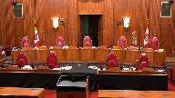
We’ll be back at 1.30.
The court will take its break for lunch.
We’ll be back at 1.30.
The court will take its break for lunch.
We’ll be back at 1.30.
The court will take its break for lunch.
We’ll be back at 1.30.
The court will take its break for lunch.
We’ll be back at 1.30.
The court will take its break for lunch.
We’ll be back at 1.30.
The court will take its break for lunch.
We’ll be back at 1.30.
Speaker 22 (02:56:28): Good afternoon Chief Justices, Justices.
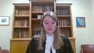
My colleague Eric Gattardi and I represent the Canadian Bar Association.
We submit that the rights of Indigenous Peoples stand at yet another inflection point.
It has been 25 years since the enactment of Section 718.2e of the Criminal Code, over 20 years since Gladue, and 10 since IP Lee.
And there has been a crescendo in the jurisprudence when it comes to this Court’s recognition of systemic discrimination against Indigenous Peoples and the role of sentencing judges in redressing it.
However, restrictions on CSOs are uniquely positioned to interrupt that momentum.
The appellant in this case seeks to remove the conditional sentence order from the remedial context in which it is situated.
But Section 718.2e and Gladue, in our submission, are central to the question of equality for Indigenous Peoples in sentencing.
The CBA makes three points.
Our first point is that 718.2e of the Criminal Code has a quasi-constitutional dimension.
Overlapping speakers (02:57:44): What does that what does that what does that mean?
Speaker 22 (02:57:46): So, this court has recognized that some legislation is quasi-constitutional and the term has been around for over 50 years.
Overlapping speakers (02:57:56): I know, but I still don’t know what it means, so maybe you can help me.
Speaker 22 (02:57:59): I think to summarize that what our position is, is that section 718.2E should be the touchstone of this court’s analysis in section 15.
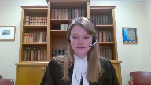
And when assessing the two steps of the section 15 test, what we’re really looking at is if judges are able to apply the framework set out in 718.2E and Gladue.
And our position is that the conditional sentence order is uniquely, serves a uniquely, if you look at its functional effect, it’s uniquely tied to that legislative imperative and must be considered when conducting a section 15 analysis.
Overlapping speakers (02:58:39): So it’s constitutional.
Speaker 22 (02:58:40): It’s not, well, it’s got a constitutional dimension to it, and I mean, in some of these cases, and they’re cited in our factum, things like human rights instruments and privacy legislation have been considered, legislative instruments elaborating a constitutional right are considered when the court conducts a constitutional analysis.
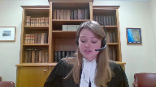
And that’s really all we’re saying.
So whether we use the title quasi-constitutional or just recognize that what Section 718.2 and 2E and Gladue are doing are they’re ensuring substantive equality for Indigenous people in sentencing.
And paragraph 87 of Gladue says that judges, to sentence Indigenous peoples equally, judges must take into account their difference.
And so in our submission, that should be the crux of the inquiry.
Are judges frustrated from being able to actually implement that imperative that’s set out in both the legislation and our case law?
And our submission is that the CSO is, it does impair that constitution or that legislative imperative.
And I think that in response to Justice Moldaver had a question about, you know, where do we draw the line if we are concerned that any change to the criminal law that will result in more incarceration, will that necessarily constitute a Section 15 violation?
Our response would be no.
And we would, again, recommend that the court consider Section 718.2E. It doesn’t mandate a particular result.
It doesn’t mandate that somebody won’t get a carceral sentence.
But what it does mandate is a methodology.
And it does mandate that the circumstances set out in IPLE should be considered and do affect to construct a proportionate sentence for an Indigenous offender.
And what we’re concerned with is the blanket ban that has been placed on conditional sentences for a large band of offenders and the disproportionate impacts that it has on Indigenous offenders in particular.
And so with my short remaining time, I’d just like to mention that in line with the submissions the CPA has previously made, we submit that a similar safety valve analysis could be employed here to provide an answer to this question of where do we draw the line in Section 15.
What this case is really concerned with is judges not having residual judicial discretion to avoid disproportionate sentences for Indigenous peoples in particular.
And that’s what we’d like this court to consider when they conduct the Section 15 analysis.
Thank you.
Justice Wagner (03:01:28): Miss Eleanor, Central QC.
Speaker 19 (03:01:37): Good afternoon.
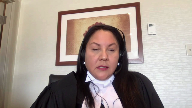
The Federation of Sovereign Indigenous Nations represents 74 First Nations in Saskatchewan.
Saskatchewan has one of the highest incarceration rates for Indigenous people, if not one of, if not the highest rate in Canada.
Saskatchewan also had more Indian residential schools than any other province.
There were 24 schools at the height of the Indian residential school era and the last school to close in the country was in Saskatchewan in 1997.
These two characteristics are not inseparable.
Residential schools disrupted Indigenous families and communities and led to personal and intergenerational trauma.
The scale of this trauma continues to be uncovered as the graves of the children at the, are unearthed at former Indian residential school sites across this country.
And this is only one facet of a complex colonial history that included Indian day schools, the 60s scoop, the past system, land dispossession, to name some of the colonial practices that have harmed Indigenous people.
Saskatchewan also has one of the fastest growing populations of Indigenous peoples in Canada.
So an ever-growing number of Indigenous people who lived this trauma find themselves before the court facing sentencing and possibly facing incarceration.
A sentencing regime with limited options is not of assistance to many Indigenous people in situations like Miss Sharma.
It has been, it has far too long failed to reflect restorative justice principles unique to Indigenous people and essentially, and essential to addressing colonialism and its effects in a meaningful and appropriate way.
When we talk about colonial trauma we are talking about removal of individuals from culture, community, spirituality and identity.
The individual and the community are impacted by this loss.
And when we talk about restorative justice we are talking about a process of individual and community healing where one is restored in the community by the community in accordance with spiritual and traditional protocols and teachings.
Indigenous people survived without jails.
Indigenous people always had the structures in place to address harm caused by members of their community.
We still have ways to deal with these offenses in our communities.
They existed long before the first court in this country and they worked long before this case.
Indigenous legal traditions and restorative justice could assist Miss Sharma and countless others in serving a period of incarceration within the community with their families, with their elders, with their supports and with their restorative justice practices through the use of conditional sentences.
This is truly what restorative justice was meant to do, to assist in healing of the offender while allowing the Indigenous person the opportunity to heal within their community using principles such as healing, reconciliation and reintegration of the offender within their community.
Restorative justice is a process of healing and returning one to their community with the opportunity to thrive.
Conditional sentences are a tool for this.
Incarceration is not.
Without this particular tool of restorative justice to promote healing and reintegration in a culturally appropriate way, the justice system will continue to fail Indigenous people.
There will be a continuing gross incarceration of Indigenous people in Canadian jails and correctional centers.
Just like residential schools, Indian day schools and the 60s scoop, it is a system that continues to disrupt communities.
FSIN submits that this Honourable Court has a very real opportunity here to protect and strengthen the ability of sentencing judges to achieve restorative justice because conditional sentences are one of the only alternatives to incarceration to combat these high rates of Indigenous people ending up in facilities.
Ms. Sharma is very similar to many Indigenous women who find themselves before the court.
She has, excuse me, excuse me, she has struggled, she has struggled and suffered serious effects, excuse me, she has struggled serious effects of intergenerational trauma.
She also clearly suffered childhood trauma, something that a sentencing judge can take into account and apply a CSO if it is part of the sentencing range.
The court should have the option to sentence Ms. Sharma to a CSO using the principles of restorative justice.
Therefore, the FSIN submits that the concerned sections of the Criminal Code violate Section 15 of the Charter of Rights and Freedoms and cannot be saved by Section 1.
Thank you.
Justice Wagner (03:06:51): Thank you very much.
Speaker 13 (03:06:59): Chief Justice, Justices, let me begin with this seemingly simple observation on behalf of the British Columbia Civil Liberties Association.
Canada’s constitution is presently blind to one of the greatest problems facing one of its most vulnerable groups.
In 1998, this court observed that there is evidence that widespread racism has translated into systemic discrimination in the criminal justice system.
Only this morning, Justice Kary Katanis observed that no one seriously disputes that there is systemic discrimination in the criminal justice system.
I might even borrow the wise words of Leonard Cohen in describing this situation, everybody knows that the dice are loaded.
For the BCCLA, the concern here is that Section 7 will not do.
Section 15 of the constitution needs to recognize and detect this problem.
This court must create a space for dialogue between Parliament and the court system that addresses the concerns faced by Indigenous defendants in the criminal justice system on a daily basis.
Justice Roe, if I may, earlier in these proceedings, you worried about the potential scope of the Section 15 right that might be discovered here.
And really, it’s not so much the scope of the right that’s problematic, it’s the scope of the problem.
And if this court were to open the dialogue under Section 15, then of course there would be…
My point is not…
Justice Rowe (03:08:34): Not that the problem is lacking in seriousness.
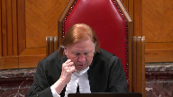
My problem is whose responsibility and authority is it to deal with it under our constitutional structure.
You seem to be saying, simply, if parliament and the executive and the legislators of the provinces do not respond effectively, then that gives rise to both a responsibility and an authority on the courts to supervise them such that the outcome is more favorable.
Speaker 13 (03:09:10): company.
Apologies.
This court is the watchdog of the Constitution.
No other institution in this country will be able to uphold Section 15 in the face of the situation faced by Indigenous defendants.
And really, allowing this claim to proceed under the Section 15 frame of analysis would amount to really a healthy dose of self-reflection and intellectual honesty.
This court has repeated time and time again that there is systemic discrimination in the criminal justice system.
And here I echo the words of Justice Karakatsanis, and I also believe the preoccupations of Justice Kazirer, what the vulnerable minority of Indigenous defendants in the criminal justice system is entitled to, fundamentally, is a justification for any action that deepens the gap that they face in the criminal justice system.
And the means by which that justification can be provided to them, at least in the legal context, is through a Section 1 justification.
The problem is huge.
The problem is vast and complex.
No one understands the full measure of this problem, but the beginning of a solution can be found through Section 1 concerns being addressed by the government in these types of cases.
Now, the BCCLA submission is essentially an invitation for this court to cast aside the fig leaf, not to tiptoe around the Section 15 issue, and essentially to find that, in view of the crisis proportions of over-representation of Aboriginal defendants, Indigenous defendants, and all aspects of the criminal justice system, there is no problem, there is no issue in recognizing that a law which relates to the operation of that system will necessarily disproportionately impact them.
The key will be in a Section 1 analysis, as well as in the second part of the Section 15 analysis, namely whether it has the effect of perpetuating a historical disadvantage.
But there seems to be a little bit of an irony in the government pointing to a system that’s discriminatory and the effects of which are difficult to isolate and understand and say, well, we can’t recognize the discrimination here, because if we did, we would recognize too much discrimination.
But that’s exactly what this court’s jurisprudence should enable lower courts to do, is to detect discrimination in the criminal justice system.
And perhaps through acknowledgement of the disproportionate impact that laws relating to the operation of the criminal justice system will have on Indigenous defendants will also be able to put an end to your struggles with causation, Justice Brown, hearkening back to the words of Justice Abella in the Fraser case, which were so aptly put to the appellant by Justice Martin at Paragraph 71.
It is not for the vulnerable group to show that the law has created the backdrop, the social backdrop leading to its vulnerability.
With that in mind, I thank the court for its attention and I close my submissions on behalf of the BCCLA.
Thank you.
Merci beaucoup.
Justice Wagner (03:12:12): Thank you.
Speaker 14 (03:12:17): Thank you Chief Justice and good afternoon Justices.
Along with my colleague Theresa Doncore, I appear today on behalf of the Queen’s Prison Law Clinic.
The Queen’s Prison Law Clinic protects the rights of our clients, all of whom are prisoners and many of whom are Indigenous through frontline legal services and public interest litigation.
Our thesis before this court is that the scandal of Indigenous mass incarceration in this country has two components.
The first component is the disproportionate quantity of Indigenous incarceration and the second is the disproportionately harsh quality of that incarceration.
Just as it is notorious that Indigenous persons are incarcerated at much higher rates than the general population, it is notorious that an Indigenous person’s experience of jail is more dangerous, more isolating, less rehabilitative and less free.
This second component of Indigenous mass incarceration is the subject of my submissions today.
We say that systemic inequality in the conditions of Indigenous imprisonment is centrally important to deciding whether the impugn provisions amount to adverse effects discrimination.
While in our factum we focus on the second branch of the Section 15 test, it should be remembered that the two branches are not quote impermeable silos unquote and that there is clearly potential for overlap in adverse effects cases.
This court may also find our submissions useful at the first branch of the TAPETAT test.
This court has repeatedly held that proportionality is the essence of a just sanction.
Proportionality in sentencing, we say, is substantive equality in action.
Just as substantive equality demands that courts attend to the concrete material impacts of a challenged law in adjudicating an equality claim, proportionality demands that sentencing judges consider the concrete material impacts of a proposed sanction in crafting a fit sentence.
Like offenders must be treated alike.
If the experience of imprisonment is going to be more punitive for a particular offender, then that offender is no longer like the others and their sentence may have to be reduced or served in the community as a result.
Indigenous offenders fall into this category.
They are unlike any other offender.
As this court held in Ewart, the gap between Indigenous and non-Indigenous offenders has continued to widen on nearly every indicator of correctional performance.
To take just three examples, Indigenous prisoners are much more likely to be placed in maximum security facilities than non-Indigenous prisoners.
This means less liberty within the institution and less access to rehabilitative programs and community programs.
Indigenous prisoners are also more likely to be placed in segregation than non-Indigenous prisoners.
And Indigenous prisoners are more likely to be subject to use of force by correctional authorities.
This remains true even when controlling for variables like age, risk, security level, gender, or sentence length.
These inequalities are worse still for Indigenous women like Ms. Sharma who face multiple and compounding forms of inequality in corrections.
That is why in its 2020-21 annual report, the Office of the Correctional Investigator dedicated an entire section to the conditions of Indigenous women’s confinement, warning that they are overrepresented in the places and circumstances with the greatest restrictions on liberty.
Conditional sentences permit sentencing judges to respond to these conditions.
Where there is evidence that the sentence to be served will be harsher than it would be for persons convicted of identical offenses, a sentencing judge can permit the sentence to be served conditionally.
By restricting the availability of the conditional sentence without any replacement, parliament deprived sentencing judges of an essential tool for crafting proportionate sentences for Indigenous offenders.
We say they stymied substantive equality in action.
As Aboriginal Legal Services writes, sending an Indigenous offender to jail when jail is not the proportionate response clearly exacerbates the crisis of overrepresentation and contributes to the mass incarceration of Indigenous women.
Justice Rowe (03:16:40): The argument seems to come down to this that substantive equality requires proportionality and sentencing.
Is that accurate?
Speaker 14 (03:16:51): No, Justice Roe, our argument is that substantive equality requires that judges be permitted to craft a proportionate sentence.
That doesn’t oblige the sentencing judge to impose any particular sentence, but it does require that they have the tools necessary to be able to impose a proportionate sentence.
And that includes consideration of the conditions of confinement.
If this Court concludes that the impugn provisions maintain or deepen the discriminatory group
Overlapping speakers (03:17:22): I would ask you to conclude please, I would ask you to conclude.
Speaker 14 (03:17:25): then it should have no difficulty finding an infringement in Section 15.
Thank you.
Justice Wagner (03:17:30): Mr. Nobleman.
Speaker 15 (03:17:34): Chief Justice, Justices, the HIV and AIDS Legal Clinic Ontario and the HIV Legal Network wish to focus on the unconstitutional effects of the conditional sentence restrictions under Section 7 of the Charter.
We will proceed in the following way.
First, I will briefly describe the context of the criminalization of HIV non-disclosure, then I will make one submission.
Section 742.1c is over-broad when it results in more custodial sentences for the least serious conduct, as I will demonstrate with an example from HIV non-disclosure case law.
Under the framework established by this court in Mabior, people living with HIV are prosecuted for aggravated sexual assault for not disclosing their HIV status to their sexual partner prior to sexual activity that carries a realistic possibility of transmission.
Aggravated sexual assault is captured by Section 742.1c because of its maximum sentence of life imprisonment.
To address your concern, Justice Moldaver, about suspended sentences.
Suspended sentences are effectively not an option for this offense and the Court of Appeal in this case at Paragraph 171 recognized that suspended sentences don’t achieve the denunciation and deterrence necessary for this type of offense and we are not aware of any case where a court has assigned a suspended sentence for aggravated sexual assault.
You may be right.
Justice Moldaver (03:19:05): may be right
but I thought that I was hearing that really what you need more in these cases, especially with indigenous people, is that you need more in these cases, especially with indigenous people, is that you need more in these cases, especially with indigenous people, is that you need more in these cases, especially with indigenous people, is that you need more in these cases, especially with indigenous people, is that you need more in these cases, especially with indigenous people, is that you need more in these
Overlapping speakers (03:19:14): Yeah.
Justice Moldaver (03:19:14): women is not punishment.
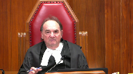
You need all the rehabilitation aspects, the remedial aspects.
And so, no one said that suspended sentences can’t be used for that.
It’s just that, you know, it’s going to have to be an exceptional case and maybe this is.
I don’t know, but I’m just telling you that I don’t see that suspended sentences have been completely taken off the table.
I think that appellate courts are saying that, but whether it’s right or not, I don’t know.
Speaker 15 (03:19:52): You may be correct that they haven’t completely been taken off the table, but I can certainly tell you that they’ve not been available in aggravated sexual assault cases for HIV non-disclosure.
And we know that individuals, including Indigenous individuals, have requested them in lieu of conditional sentences.
The federal government has acknowledged that HIV non-disclosure is over-criminalized in Canada and convictions can and do take place where there is no transmission of HIV, no intent to transmit HIV, and zero or negligible risk of HIV transmission.
And these prosecutions particularly affect Indigenous, Black, and Two-Spirit LGBTQ people.
Now turning to our submission on over-breadth, Section 742.1c casts a wide net.
This provision is so broad that it captures conduct underlying – it captures offences and underlying criminal conduct that bear no relation to its purpose of ensuring that individuals who commit serious offences receive custodial sentences.
The gravity of an offence cannot be divorced from the conduct underlying the offence, so what this court refers to as the subjective gravity in Friesen at Paragraph 96.
And HIV non-disclosure cases are illustrative of Section 742.1c’s over-breadth because the operative charge captures conduct that can certainly be serious.
But much of the conduct at issue in HIV non-disclosure cases falls at the least serious end of the spectrum, and this is where conditional sentences may be fit and appropriate.
In our fact, in beginning at Paragraph 10, we describe HIV non-disclosure cases where courts found conditional sentences to be appropriate, including the case of JM in which a woman living with HIV pleaded guilty to aggravated sexual assault for not disclosing her HIV status during a single sexual encounter with each of two complainants, and the court found her failure to disclose was directly related to a mental health condition, which was subsequently treated.
HIV was not transmitted.
She received a conditional sentence of 12 months, and she would not be eligible for that sentence today.
Attorneys general in several jurisdictions have recognized the broad spectrum of conduct underlying HIV non-disclosure cases and have directed Crowns to no longer prosecute cases involving the lowest risk of transmission.
But in other Canadian jurisdictions, these cases can still be prosecuted as aggravated sexual assault, so the upshot of this state of affairs is that an offense which carries so little risk of harm that it is no longer prosecuted in some jurisdictions is at the same time under 742.1C considered an inherently serious offense that can never warrant a conditional sentence, and
this undermines clarity and consistency.
So, seeing my time is up, I will conclude by saying the conditional sentence restrictions tie the hands of sentencing judges in a way so that the burden of unfit sentences falls systemically on Indigenous, Black, and Two-Spirit LGBTQ individuals in the context of HIV non-disclosure.
Thank you very much.
Justice Wagner (03:23:05): Thank you.
Speaker 23 (03:23:10): Good afternoon Chief Justice, Justices, friends, and learned friends.
Along with Ms. Charette, I appear today on behalf of the Women’s Legal Education Action Fund.
Leave submissions are premised upon four primary points.
First, substantive equality and the imperative of reconciliation require the acknowledgement of history and circumstances in the equality analysis.
This court and the Court of Appeal have expressly endorsed a substantive equality approach to Section 15, Charter Claims.
The imperatives of reconciliation dovetail with the substantive equality approach to Section 15, which takes into account historical injustice when assessing whether a measure treats people differentially or reinforces existing disadvantages.
Both pull in the same direction and support the availability of conditional sentences for Indigenous people, where possible, based on the principled objective of ameliorative results.
The criminal justice system is historically complicit in and is a modern location of what this court has called staggering injustice and systemic discrimination against Indigenous people.
Indigenous women have been uniquely negatively impacted by their interactions with the criminal justice system.
While the term reconciliation has been potentially overused and certainly misinterpreted, we submit that its core precepts have been acknowledged by this court and are useful and relevant to this case.
Reconciliation is relevant when considering changes to how Canada punishes citizens from the Indigenous population.
In light of the complexity of the criminal justice system and the dark era of colonialism, that reconciliation seeks to move through.
Secondly, we submit that the Criminal Code provisions must be interpreted purposefully in line with the advancement of reconciliation.
In Daniels, this court indicated that reconciliation is a goal of Parliament and that it can and should guide the interpretation of constitutional provisions.
It stated that recent political developments and commissions, and I quote, all indicate that reconciliation with all of Canada’s Aboriginal peoples is Parliament’s goal, end quote.
The recent passage of the United Nations Declaration on the Rights of Indigenous People Act reinforces the conclusion that Parliament has reconciliation as a goal.
Justice Rowe (03:25:38): said is that in giving effect to 35-1, reconciliation as an objective has to motivate it and has to guide it.
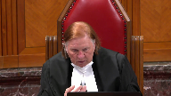
That’s its constitutional role.
What you’re saying now seems to be that reconciliation as a policy goal has somehow been constitutionalized throughout the whole.
Every single provision of the Constitution now has to be animated and interpreted by reference to reconciliation.
I don’t think this Court has said that.
Speaker 23 (03:26:25): Thank you Justice Froh.

I would refer you to paragraph 74 wherein this court stated, paragraph 74 rather of the Gladue decision wherein this court stated
and I quote, it is appropriate to attempt to craft the sentencing process and the sanctions imposed in accordance with the Aboriginal perspective.
Reconciliation as Leif views it is the the centerpiece to section 35 which would allow that Aboriginal perspective to to be propelled, to animate it and so we do see it as the governing ethos in most if not all matters involving Indigenous people. Yes.
And so we say that Parliament intended to fulfill substantive equality and advance reconciliation with the 1996 reforms.
This requires at a minimum an assessment of the full impact of any changes to the 1996 provisions in terms of the ways in which Indigenous people and specifically Indigenous women may be harmed.
It also requires assessment of the impact of changes on the broader goals of reconciliation and equality, substantive equality, real equality.
Thirdly, we submit that removing the option of conditional sentencing denies space to Indigenous legal orders and deprives Indigenous offenders of the possibility of a sentence that accords with their conception of justice.
Rationally, the unavailability of community-based solutions imposes multifaceted harms and has an amplified and discriminatory effect that both principles of substantive equality and reconciliation demand be foiled.
Lastly, the Crown is essentially advocating for a formal equality approach that is inconsistent with this Honourable Court’s pronouncements and I see that my time is up.
Thank you very much.
Justice Wagner (03:28:18): Thank you.
Michelle Biddulph.
Speaker 17 (03:28:22): Yes, good afternoon Chief Justice, Justices.
Along with my colleague David Humphrey, we appear today on behalf of the Canadian Civil Liberties Association.
In our factum, the CCLA outlines a proposed framework for the adjudication of claims that raise multiple charter rights and urges this court to apply that framework in this case and decide both the Section 7 and Section 15 issues.
I’m going to leave that point in our factum for this court to consider and focus my time today on the issue of the use of the maximum sentence for an offense as a proxy for seriousness and its impact on the overbreadth analysis.
As this court recognized at paragraph 96 of Friesen, the seriousness of any offense at the time of sentencing is determined by two key factors.
The objective gravity of the offense, which is indicated by the maximum available sentence and any applicable mandatory minimum sentence, and the subjective gravity of the offense, as indicated by the circumstances of the actual offense committed as well as the moral blameworthiness of the offender.
The seriousness of an offense for the purpose of sentencing is therefore the sum of two factors, objective and subjective gravity.
The problem with the provisions in this case is that in order to achieve Parliament’s purpose of ensuring that those who commit serious offenses serve their sentences in jail, Parliament used an incomplete equation to define serious offense.
Now before I go further in my argument on this, I want to address Justice Moldaver’s question about conditional discharges, absolute discharges, and the question of whether dismissing this appeal would somehow hobble Parliament’s ability to create sentencing policy.
The position of the CCLA is that the use of maximum sentence to restrict access to other statutory benefits in other contexts may also offend the principle against over-breadth.
It depends on the way in which maximum sentence is used in each context.
But potential over-breadth in other contexts is not a defense to over-breadth here.
If anything, that’s a consideration for Section 1, not for Section 7.
Now with respect to whether this argument could hobble Parliament’s ability to increase the sentencing tariff, in my submission it does not, and that’s because this court needs to read Friesen and Parenteau together.
In Friesen, this court held that Parliament’s increase in the maximum sentence for an offense is an increased recognition of the objective gravity of that offense, which must be reflected in an increased sentencing range.
But as this court recognized in Parenteau, a sentencing range is not a straight jacket.
Proportionality always takes precedence, and there will be cases where a sentence below the range is appropriate.
So Parenteau tempers Friesen insofar as it recognizes that even where the range is high, there are almost always situations where sentences below the range are appropriate.
Justice Brown (03:31:23): But that’s interpreting a statutory scheme, Ms. Bidoff, aren’t you bootstrapping that a little bit into a constitutional discussion?
Speaker 17 (03:31:32): Certainly, Justice Brown, my only point was that Parliament is still entitled to increase maximum sentences and increase the tariff.
Overlapping speakers (03:31:38): Right.
Speaker 17 (03:31:38): Recognizing that a sentence below the range could still can still be proportionate does not affect parliament’s ability to do that.
Justice Jamal (03:31:45): Isn’t the same analysis that really applies under Section 12 as well, Ms. Bidoff, in terms of looking at the, both the moral culpability of the offender and the manner in which the offence is committed and the overall seriousness of the offence, it’s the same sort of analysis and that is a constitutional analysis.
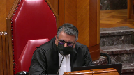
Speaker 17 (03:32:05): Yes, I would agree with that, Justice Jamal.
Really, we have to remember that these provisions only actually matter in one particular situation.
That’s where a sentencing judge has examined the objective gravity of an offense, circumstances of the offense and the offender, weighed all aggravating and mitigating factors, and applied all the principles of sentencing, including denunciation, deterrence, and parity, and has then concluded that a fit and proportionate sentence is a conditional one.
In that situation, what this provision does is it tells the sentencing judge that they cannot impose that fit and proportionate sentence because the particular offense that person is being sentenced for is one that could have been committed by someone else in a more serious manner.
In my submission, the overbreadth of these provisions lies in their application to offenses that cover wide spectrums of conduct.
At one end of the spectrum is very serious conduct, as reflected in the maximum sentence.
At the other end of the spectrum is conduct that, while still a criminal offense, is less serious and far less deserving a penalty.
The appellant recognizes this, as she argues that, in some of these cases, a suspended sentence would be appropriate.
However, once you accept as a rational proposition that some of the conduct covered by these offenses can appropriately result in a suspended sentence, then what is the rationale for a wholesale exclusion of conditional sentences?
In my submission, the appellant’s concession necessarily demonstrates the overbreadth of this provision.
It does not save it.
Thank you.
Justice Wagner (03:33:31): Thank you very much.
Speaker 18 (03:33:37): Thank you and good afternoon Chief Justice and Justices.
The Assembly of Manitoba Chiefs advocates for a future where First Nations laws and jurisdiction share equal footing with colonial laws.
The Assembly of Manitoba Chiefs does not take a position on the outcome of this appeal but it asks this court to interpret the issues in a manner that respects and does not unduly limit First Nations laws and perspectives in the Canadian justice system.
The crisis affecting First Nations citizens in the criminal justice system has been well documented, discussed in detail today, and is a direct result of the detrimental impacts of colonization.
In response this court and IPLE directed that judicial notice be taken of the history of colonialism, displacement and residential schools, and how that history translates into, among other things, higher levels of incarceration for Aboriginal peoples.
The Assembly of Manitoba Chiefs submits that judicial notice must also extend to the impacts of colonialism on First Nations laws and jurisdiction.
Prior to European contact First Nations had their own laws and legal orders.
In fact treaties were entered into by many First Nations and the Crown to reconcile pre-existing First Nation sovereignty with assumed Crown sovereignty.
Reconciliation has yet to take place.
The Canadian justice system was unilaterally imposed on First Nations with the assertion that colonial law is the only legitimate source of law.
Colonial delegitimization of First Nations legal orders has been disastrous to the fabric of First Nations in Manitoba and elsewhere.
Thirty years ago in fact the Aboriginal justice inquiry stated for Aboriginal people the essential problem is that the Canadian system of justice is an imposed and foreign system.
In order for the failure to consider the effects on First Nations and First Nations offenders continues to undermine and ignore First Nations laws.
Despite concerted attempts to subvert First Nations laws and perspectives and impose the colonial legal system, First Nations laws still exist and are practiced, implemented and being revitalized by many First Nations today.
The application of gladio factors by sentencing judges is one of the limited means in which First Nations laws and perspectives on justice are considered in the Canadian legal system.
While the Assembly of Manitoba Chiefs does not wish to conflate restorative justice with First Nations legal responses to harm or to suggest that First Nations legal responses to crime must only result in a conditional sentence, the Assembly of Manitoba Chiefs submits that conditional sentences are a very important means of implementing First Nations laws and perspectives as they may assist in restoring peace and equilibrium.
When First Nations have input and control over the response to crime in their nations and affecting their citizens, they can reason with and through the resources from their own legal traditions to formulate appropriate responses and solutions.
First Nations citizens are more likely to view a sentence as just where it is crafted in a manner that takes the First Nations laws and perspectives into account.
The removal of community-based sanctions perpetuates the discrimination faced by First Nations and their citizens in the Canadian justice system as it constitutes a failure to adequately reflect First Nations laws and perspectives in the sentencing process.
The Assembly of Manitoba Chiefs asked this court to cultivate and to protect spaces in Canadian law like the GLADU framework and the availability of conditional sentencing in ways that respect and legitimize First Nations laws and perspectives.
Thank you.
Justice Wagner (03:37:30): Thank you very much.
Speaker 19 (03:37:35): Thank you, Chief Justice and Justices.

Today, on behalf of the Native Women Association of Canada, I make two key points related to the second part of the section 15 analysis.
First, the impugn provision separates Indigenous mothers and children.
Many Indigenous kids without mothers end up in foster care and then in jail themselves.
This is the child welfare to prison pipeline.
Second, the impugn provision deny conditional sentences where they would otherwise be available under mining reconciliation.
So my first point, the impugn provision aggravates systemic discrimination because they perpetrate intergenerational family separation cycles for Indigenous women.
Separating mothers and children is a significant harm for Indigenous families.
It is always heartbreaking when parents are separated from their children because of incarceration, but it is different for Indigenous people.
The National Inquiry into Missing and Murdered Indigenous Women and Girls notes that overwhelming number of incarcerated Indigenous women are residential school survivors or have family who are survivors, just like Miss Sharma.
This is not a coincidence.
It is a consequence of intergenerational family separation and incarceration pattern that began with the residential school system.
When Indigenous mothers are sent to jail, their children often go to foster care.
The MMIWG Inquiry noted that 64% of incarcerated Indigenous women are single mothers.
The Inquiry also notes, makes it clear that this leads many kids down a path to jail themselves.
This pattern is what the majority for the courts below refer to as the child welfare to prison pipeline.
And the pressure is building.
Canada’s correctional investigation warns that Indigenous women’s federal incarceration rates are nearing 50%, whereas they make up only 4% of Canada’s population.
When sentencing judges like Miss Sharma cannot apply a conditional sentence, more Indigenous women are sent to jail than is necessary.
This is not equality for Indigenous people.
This adverse impact on Indigenous women go beyond the individual offender and their families.
This impact may be the very process of reconciliation.
This leads me to my second point.
The Gladue principle requires crafting sentences that respond to Indigenous people’s unique and systemic background factors.
Reconciliation means honoring Indigenous people’s right to practice the custom and tradition that are integral to their identities.
Before and since colonization, Indigenous people developed and applied their own legal systems.
These valid laws survive and thrive today.
Conditional sentencing gives a judge the opportunity to incorporate Indigenous traditional practices where appropriate.
Indigenous people have an inherent right to practice their legal tradition.
The impugn provision undermines this right, thereby impeding reconciliation.
Gladue principle do not mean sentencing judges must impose conditional sentence for all Indigenous offenders.
This honorable court clarified that in Gladue and again in IPLE.
Reconciliation asks judges to meaningfully consider an Indigenous person’s legal tradition alongside sentencing principles.
The impugn provision wipe this right off the table.
Where the impugn provision deny an Indigenous person a conditional sentence where it would otherwise be available.
This can infringe their right to community-based rehabilitation and healing activities that are integral to their Indigenous identities.
Canada promises reconciliation and impugn provision erode Indigenous women’s trust in that promise.
Conditional sentences may be but one tool to counter the cycles of Indigenous family separation, but they breathe life into the Gladue principles.
Barring any question from this court, these are my submissions.
Thank you.
Justice Wagner (03:41:45): Alana Robert
Speaker 20 (03:41:50): Good afternoon, Chief Justice and Justices.
Tanshikiwau, I’m here today with my colleague Connor Bildfeld, representing the intervener of the Ontario Native Women’s Association.
I will be making three points today.
First, in a case alleging a violation of Indigenous Peoples’ right to equality under the Charter, the Court should consider the impugn laws’ impacts on Indigenous laws, including Indigenous Peoples’ roles under those laws.
Second, Section 718.2e of the Criminal Code enables Gladue principles which allow Indigenous women to fulfill their inherent and sacred roles and responsibilities under Indigenous laws.
And third, the impugn provisions interfere with Indigenous women’s ability to fulfill their sacred roles and responsibilities under Indigenous laws.
This interference has devastating consequences on Indigenous women, their families, and their communities and exacerbates the disadvantage of all Indigenous Peoples.
Indigenous laws have existed in the territory now known as Canada since time immemorial.
Under these laws, Indigenous women have sacred roles and responsibilities, including as mothers, caregivers, the carriers of culture, land defenders, water protectors, and nation builders.
Despite deliberate attempts to erase Indigenous laws and the roles of women from the Canadian landscape, these laws continue to be practiced today.
These laws must be respected in the Section 15.1 Charter Analysis.
Where a violation of an Indigenous person’s Charter right to equality is alleged, a Court should consider the law’s impact on the individual’s roles under Indigenous laws.
Any negative interference with these roles should be recognized as a harm that exacerbates disadvantage.
This approach is consistent with the Court’s recent decision in Frasier, which held that Courts must examine the full context of a claimant group situation and the actual impact of the impugn law on that situation.
This wide lens enables and requires Courts to consider Indigenous laws in the equality analysis.
Section 718.2e of the Criminal Code provides a critical avenue for upholding Indigenous women’s sacred roles by making non-carceral alternatives available.
It gives the Courts the possibility and the duty to allow Indigenous women to remain in their communities as they serve their sentences wherever possible, where they can continue to fulfill their distinctive roles.
Access to non-carceral alternatives like healing lodges, treatment centres, and conditional sentences are essential to respecting these roles.
And these non-carceral alternatives help keep families together.
The impugn provisions interfere with Indigenous women’s ability to fulfill their roles by preventing them from remaining in their communities and instead requiring their displacement into prisons.
This perpetuates a centuries-long legacy of forced removal and colonial interference with Indigenous ways of living.
This has devastating consequences on Indigenous women, their families, their communities, and future generations.
The absence of Indigenous women deprives all those around them from benefiting from their roles as mothers, caregivers, the carriers of culture, and many others.
The ripple effects of these losses can last for generations and can be felt in other areas like the child welfare system.
The gravity of this loss is evident in Ms. Sharma’s case as well as the recent Ontario case of George, which was referenced by the respondents.
The circumstances of these cases demonstrate difficult experiences which repeat themselves among Indigenous offenders across the country.
The final report from the National Inquiry into Missing and Murdered Indigenous Women and Girls found that many Indigenous women come into contact with the criminal legal system because of acts that directly relate to their survival.
By taking conditional sentences off the table in an arbitrary list of circumstances, the impugn provisions enable the continued over-incarceration of Indigenous women who, which we’ve recognized today, now make up nearly half of the population of federal prisons.
But this is not where Indigenous women belong, and it can no longer be the default.
This court has the opportunity to move us forward on the path of reconciliation by recognizing and honouring Indigenous laws on women’s roles in the equality analysis, and I urge it to do so.
Thank you.
Thank you for your time, Marcy.
Justice Wagner (03:46:39): Thank you.
Jessica Orkin.
Speaker 21 (03:46:47): Good afternoon, I appear today along with my colleague Adriel Weaver on behalf of the David Asper Center for Constitutional Rights and I hope to speak to four points.
The first is in response to Justice Brown and Justice Roe’s questions earlier today regarding whether causation belongs within the stage one or two of the section 15 analysis
and conceptually we concede that causation could play a role at stage one as well as stage two
but we submit that it’s appropriate for this court to make it clear that causation analysis and inquiries into whether the relationship between the legislation and the adverse impact on a prohibited ground is sufficiently causal that these inquiries belong at stage two only.
We submit that Fraser paragraphs 70 and 71 go some significant distance already to establish this point but to the extent that there is any lack of clarity we submit that the confusion ought to be dispelled.
An inquiry into causation does not belong in stage one.
Inquiring into causation within stage one will have the structural effect of encouraging formal equality style analysis.
This will happen over and over again and I think we can see that it is a tendency from the types of arguments that have been raised in this case.
We submit that the importance of substantive equality within the structure of this court’s equality jurisprudence compels the conclusion that any inquiry into the sufficiency of causation should be at the second stage.
My second point.
I draw your attention to paragraphs 8 through 12 of the Asper Center’s Factum which contain the argument that was graciously referenced by my friend Mr. Aylward.
What the Crown describes as the pre-existing historical disadvantage of Indigenous peoples is not separate from and independent of the criminal justice system in general and it is not separate from and independent of the sentencing process in particular.
Discrimination against Indigenous peoples is in part caused by the criminal justice system and in particular that discrimination is entrenched and exacerbated by the sentencing process, including in the way referenced by Justice Roe earlier today in that the sentencing process, the sentencing law and sentencing options do not take account of Indigenous offenders’ unique circumstances and unique needs and this is a structural problem.
The staggering and shameful over-incarceration of Indigenous people in Canada is a symptom and a result of that discrimination and in these circumstances Section 15 requires Parliament to implement measures to remedy that discrimination and to promote the equality rights of Indigenous people in the imposition and carrying out a sentence.
So, in other words,
Justice Rowe (03:49:39): In other words, if conditional sentences didn’t exist, there would be an obligation on Parliament to create them.
Is that your point?
Speaker 21 (03:49:47): That is not my point, Justice Roe.
My point is slightly different than that.
The Parliament chose to enact conditional sentences and chose to enact the Gladue framework in 718.2 sub e.
That was Parliament’s choice and that parliamentary choice has responded to a constitutional imperative.
And it’s a partial response, no one suggests that it has been complete in overcoming the substantive inequality faced by Indigenous people, but it is an important response.
It was Parliament’s choice.
Parliament could make a different choice and if Parliament had removed conditional sentences now as an available option and chosen to do something else in their stead to remedy and to address this substantive inequality, we would be having a different discussion about Section 15.
And that analysis would be happening depending on the policy choice made by Parliament.
It could be happening under either Section 50 in the second stage or under a Section 1 analysis.
The challenge here is that Parliament has not attempted to remedy that absence in what it has done here.
And so I would say, and this actually was part of my third point
but I’ll jump to it, it isn’t for us to say what Parliament could or ought to have done had it in this case not acted unconstitutionally.
There is scope for ample policy choices by Parliament, including to make sentencing more onerous and to make sentencing results more restrictive, but it has to act within the bounds of its constitutional obligations.
And Justice Roe, I draw your attention to the comment that you made at paragraph 145 of Cho-Han, that when a statutory provision gives effect to a constitutional right, there is nothing strange about constitutional scrutiny of amendments to that statute.
This doesn’t constitutionalize the existing statute, but rather looks at whether the repeal or modification gives rise to unconstitutional effects.
And in this case, the right in question is the Section 15 right of Indigenous offenders to substantive equality before and under the law.
Thank you.
Justice Wagner (03:52:02): Thank you.
Speaker 22 (03:52:08): Good afternoon Chief Justice and Justices of the Court, I act for the Canadian Association of Elizabeth Frye Societies, an organization whose core mission is to advocate on behalf of some of the most marginalized and systemically oppressed members of our society, criminalized and incarcerated women.
In the case of Indigenous women like the respondent, intersecting marginalizations including gender, indigeneity, family status and economic precarity give rise to a complex set of challenges which contribute to their increased likelihood of trauma, mental health conditions, family separation, criminalization and imprisonment.
Our submission to the Court in this appeal, as set out in our factum, asks the Court to consider and elaborate upon the relationship between Section 7 and Section 15 of the Charter in the context of penal legislation.
We’re specifically advocating for an approach to Section 7, a modified approach to Section 7 when a possibility of loss of liberty arises within a discriminatory context.
It’s somewhat surprising that this Court’s Section 15 jurisprudence in relation to penal legislation is relatively sparse, despite its repeated recognition of systemic discrimination against Indigenous people in criminal justice institutions.
Constitutional challenges to the Criminal Code and related legislation have tended more often to be resolved pursuant to Section 7 or Section 12, with Section 15 either not being raised by the claimant or not being dealt with by the Court, as was noted by the Canadian Civil Liberties Association.
Indeed, seminal cases in which this Court has articulated the urgency of addressing systemic inequality in criminal justice institutions, such as Williams, Ippoli and even Gladue itself, were not Section 15 cases.
And this may be in part because, as many of the exchanges today have shown, the existing Section 15 framework is ill-suited to application in the context of criminal law and imposes what we would submit as an unduly onerous burden on rights claimants who already face a multitude of barriers to access to justice.
Thank you.
Justice Moldaver (03:54:17): I’m sorry to bother you with this, but it’s been bothering me a little bit throughout the hearing.
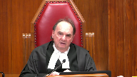
You know, drug dealers, and it’s well documented, choose their victims carefully.
And I think it’s well documented that they look for vulnerable people who are marginalized, who are out of money, who are looking in desperate situations, and they use them as the targets because they are, you know, they’re desperate.
And I worry, and tell me that you think I may be totally wrong, but I worry if these drug dealers get wind of the fact that the Indigenous women, that Indigenous women will likely get conditional sentences and not have to go to jail, that they will, we will be making them even greater targets to organize crime and to the drug dealers as the targets that they will choose to take trips down south and so on to make fast money.
Now, that may be very weird to you, it may be right out of the blue, but speaking for myself, I worry about that because these people will prey on not just the most vulnerable, you will make Indigenous people a real good target because the drug dealers will be able to say, don’t worry, you’ll get a conditional sentence, you won’t have to go to jail.
Speaker 22 (03:55:49): Well no, I don’t think that’s a crazy idea
and I think in fact it recognizes the extent to which Indigenous women in particular are already vulnerable and that vulnerability is already being preyed on as was the case here with Ms. Sharma who found herself in such a precarious situation that she felt she was left with no choice
and I would put it to you Justice Moldaver that I don’t think you know these drug dealers that you’re referring to really care what the consequences are for the people that they target to do this work.
I don’t think that we can assume that you know the question of whether Ms. Sharma was likely to receive a conditional sentence or a carceral sentence or some other disposition if caught was a likely preoccupation for this person and so I’m not sure that you know to obviate or to obscure a new potential vulnerability we should allow the existing vulnerability to be further impacted by imposing a custodial sentence in the circumstances
but I do think your question certainly does recognize the extent to which there are vulnerabilities on many levels.
I would simply say given the passage of time that in our view a streamlined approach to the question of whether there’s a discriminatory context is appropriate and that these issues should continue to be resolved as much as possible under section seven but allowing for and recognizing the discriminatory context in which the issue arises.
Thank you very much.
Thank you.
Justice Wagner (03:57:24): Emily Young.
Speaker 23 (03:57:28): Good afternoon Chief Justice and Justices of the Court.
The John Howard Society of Canada will focus on two aspects of the submissions it made in its Factum.
First, we will speak to the conditional sentence as a distinct sentencing tool that can serve multiple purposes and is uniquely placed to mitigate the harms of incarceration.
We will highlight some cases in which judges have imposed conditional sentences on offenders where those sentences would not have been available before the Court of Appeals decision in this case.
Second, we will comment briefly on how the appellant’s approach to the first step of the Section 15 analysis improperly shifts the focus away from the challenge law’s effects on the claimant and claimant group being Miss Sharma and Indigenous women.
And we think and would submit that this follows from and builds on Miss Orkin’s submission that the appellant’s arguments harken back to a formal equality analysis.
As you’ve heard, conditional sentences can be imposed for serious crimes.
They include punitive conditions that restrict the offender’s liberty and impose a real threat of incarceration on breach.
So they can be used in cases where denunciation and deterrence are important sentencing principles.
But conditional sentences are not limited to these sorts of liberty restrictions.
They permit courts to impose conditions that promote rehabilitative and restorative objectives, including attendance at treatment programs, counselling, community service, and educational programs.
As a result, this Court has observed and proved that conditional sentences tend to be more effective than incarceration in promoting rehabilitation.
They’re also a particularly effective means of achieving appropriate individualized sentences because they are a flexible tool that can be tailored to the particular circumstances of the offender.
This is something that Courts across Canada have recognized and we address in our Factum starting at paragraph 10.
For example, in the Queen and Wapus, an Ontario Superior Court decision that is listed in Appendix A to our Factum, an Indigenous man was sentenced to a 12-month conditional sentence after he pleaded guilty to fraud over $5,000 for signing cheques he knew to be fraudulent.
At the time of sentencing, Mr. Wapus, a member of Naskintaga First Nation, was a 64-year-old residential school survivor who suffered from serious health issues that required him to go to a hospital for dialysis three times per week.
In addition to significant liberty restrictions, the terms of his conditional sentence included restitution, counselling at a culturally appropriate organization, attending financial literacy programs offered by Nishinaabe Aski Legal Services, and community service.
This sentence was unavailable before the Court of Appeals decision in this case.
At least 30 offenders in Ontario have served sentences in the community instead of in jail, receiving what sentencing judges found to be more appropriate sentences, more conducive to rehabilitation as a result of the Court of Appeals decision in this case.
In Appendix A to our Factum, we’ve listed 25 of those that are first-instance decisions and we would note to close this aspect of our submissions that that number 30 only includes reported decisions citing the Court of Appeals decision in this case, along with the George case that you heard about earlier today from the respondent.
There are no doubt others who have been spared incarceration but not spared appropriate punishment as a result of the Court of Appeals decision.
Briefly on to Section 15.
This Court has emphatically stated, and it’s not controversial, that Section 15 protects substantive and not formal equality.
Despite this, aspects of the appellant’s position in this case reflect a disguised formal equality analysis.
Specifically, the appellant states that the challenged provisions must create a distinction on their own and viewed in isolation.
This can be seen at paragraph 34 of the Appellant’s Factum.
According to the appellant, the only possible distinction created by the challenged provisions is between those convicted of offences punishable by less than 14 years and those convicted of offences punishable by 14 years or more.
In other words, because the law treats likes alike offenders who have committed the same offence, there can be no race-based distinction.
On that reasoning, we say the only way this Court could find a distinction is if the law actually said something like indigenous offenders cannot receive a conditional sentence.
This can’t be the case on the Court’s jurisprudence.
If it were, it would be impossible to ever bring a discrimination claim based on adverse effects.
It would be like ignoring the effects of an aerobic fitness standard on women or the lack of funding for sign language interpretation in the provision of health services on deaf individuals.
We would urge the Court not to take the appellant’s invitation to collapse the first step of the Section 15 test into formal equality analysis.
Justice Wagner (04:02:39): Any reply, Ms. Conroy?
Speaker 1 (04:02:44): Thank you Chief Justice.
The Crown has no substantive reply except just to point the court uh based on a question from Justice Moldaver before about what the exact wording was when uh with the enactment in 1996 of the conditional sentence provision and we just wanted to point out that that exact wording can be found in our condensed book.
The appellant’s condensed book behind tab two has uh will show you exactly as the legislation looked when it was enacted in 1996 and in the tabs that follow in our book uh you can see the legislation as it was amended uh through each of the amendments that that took place in 1997 in in 2007 and and again in in 2012.
Thank you very much.
Justice Wagner (04:03:31): Thank you.
I thank all the attorneys for their submissions.
The court will take the case of their advisements and the court is adjourned till tomorrow morning 9.30.
Thank you.